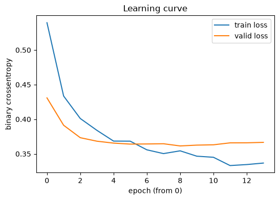
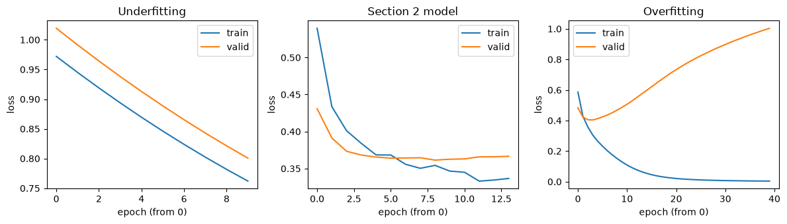

[10장] 딥러닝 (2): 학습 제어와 학습 곡선
비즈니스빅데이터분석
10장
딥러닝 (2): 학습 제어와 학습 곡선
2027학년도 「비즈니스빅데이터분석」의 준비 중인 교재입니다. 편집 상태를 검토하기 위해 미리 공개한 것으로, 수업 전에 내용과 순서가 바뀔 수 있습니다.
학사 12주차 · 교재 10 · 3부 AI 모델링 · 출제 분야: AI 모델링 > 딥러닝 모델 학습, 모델 성능 평가 및 시뮬레이션, 모델 성능 개선 및 그래픽 출력
AICE Associate의 딥러닝 문항은 신경망을 구성하는 데서 끝나지 않는다. 가이드는 Dropout 층을 넣고 조기 종료를 지정하여 학습시키게 하며, 학습 기록에서 훈련과 검증의 손실을 꺼내 matplotlib으로 그리게 한다. 이어서 그래프에서 읽은 값(검증 손실이 가장 작은 에폭 등)을 답 변수에 저장하게 하거나, 학습한 모델로 검증용 데이터를 예측하여 지표를 계산하게 한다. 학습 기록의 키 이름을 틀리거나 예측 확률을 범주로 바꾸지 않으면 뒤 문항이 모두 영향을 받는다.
본 장은 9장의 신경망을 이어서 다룬다. Dropout과 배치 정규화, 조기 종료와 최적 모델의 저장, 학습 기록의 구조, 학습 곡선, 모델의 저장과 불러오기, 예측 확률의 범주 변환, 머신러닝 모델과의 지표 비교를 차례로 설명한다. 자료는 7장의 분류용 데이터(이탈 여부 churn)를 쓴다. 조기 종료가 언제 멈추고 어떤 가중치를 남기는지는 실제 학습 기록을 에폭마다 따라가며 확인하고, 학습 곡선의 세 유형(과소적합, 적정, 과대적합)은 이 장에서 실제로 학습시킨 세 모델의 곡선으로 판단한다. 본 장으로 출제 범위의 AI 모델링 분야를 모두 다루며, 다음 장부터는 시험 전체를 시간 안에 푸는 연습을 한다.
학습 목표
Dropout과BatchNormalization을 층 구성에 넣고, 파라미터 수와 학습 시의 동작을 설명한다.EarlyStopping의monitor,patience,restore_best_weights와ModelCheckpoint의save_best_only를 지정하여 학습을 제어한다.fit이 돌려주는 학습 기록의 키를 확인하고, 검증 손실이 최소인 에폭을 코드로 구한다.- 훈련과 검증의 손실을 학습 곡선으로 그리고, 과대적합이 시작되는 지점을 읽는다.
- 모델을
.keras파일로 저장하고 불러와 예측하며, 예측 확률을 기준값이나np.argmax로 범주로 바꾼다. - 같은 검증용 데이터로 신경망과 머신러닝 모델의 지표를 비교한다.
- 학습 곡선을 과소적합, 적정, 과대적합의 세 유형으로 판단하고, 조기 종료의 동작을 학습 기록으로 추적한다.
준비 사항
| 항목 | 내용 |
|---|---|
| 실습 노트북 | AICE_10장_실습_학생용.ipynb |
| 자료 | customers.csv(분류용 훈련 데이터의 원본), loans.csv(시간 제한 문항용) |
| 앞 장과의 연계 | 9장(신경망의 구성과 학습), 7장(분류 지표), 8장(과대적합의 확인), 2장(matplotlib의 선 그래프와 범례) |
| 실습 환경 | TensorFlow가 설치되어 있어야 한다. 확인 방법은 부록 A를 따른다 |
노트북의 0번 셀은 3~4장의 표준 처리 과정과 7장의 분류용 분할을 수행한다. 9장과 달리 회귀용 데이터를 쓰지 않으므로 변수 이름에 접두가 없다(X_train_s, X_valid_s, y_train, y_valid).
0. 실습 준비
이 절에서는 노트북을 열고 자료 준비 셀을 실행하여, 이 장의 예제가 쓰는 변수가 준비되었는지 확인한다. 실습 환경의 설치와 접속은 부록 A를 따른다.
0-1. 노트북 열기
- 실습 폴더의
book/에서AICE_10장_실습_학생용.ipynb를 연다. 이 장의 예제는 모델 파일(.keras)을 노트북과 같은 폴더에 만들므로, 그 폴더에 파일을 쓸 수 있어야 한다. - 커널을 다시 시작하고 출력을 지운 뒤 위에서부터 차례로 실행한다. 1부의 예제는 2.2절에서 학습한 모델과 학습 기록을 3~7절에서 이어서 쓴다.
[그림 자리: 저장된 모델 파일이 보이는 주피터 파일 목록] 1부의 5절까지 실행한 뒤 JupyterLab 왼쪽의 파일 목록에
best_churn.keras,churn_dnn.keras가 노트북 파일 옆에 나타난 화면. 파일의 크기와 수정 시각이 보이게 찍는다. 찍을 곳: 학교 실습 환경의 JupyterLab 파일 브라우저.
- 확인 1 첫 셀의 제목이 「[10장] 실습: 딥러닝 (2): 학습 제어와 학습 곡선」이다.
0-2. 자료 준비 셀의 실행
# [예제 1]
import numpy as np
import pandas as pd
from sklearn.model_selection import train_test_split
from sklearn.preprocessing import StandardScaler
DATA = "../kit/data/AICE_공통/"
# 3장: 정제본 df_clean (2940행, 16열, 결측치 0)
df = pd.read_csv(DATA + "customers.csv") # (3030, 17)
df = df.drop_duplicates() # (3000, 17)
df = df.drop(columns=["customer_id"])
df = df.dropna(subset=["annual_spend"]) # (2988, 16)
df = df[(df["age"].between(19, 80)) | (df["age"].isna())]
df = df[df["annual_spend"] > 0] # (2973, 16)
q1 = df["avg_session_min"].quantile(0.25)
q3 = df["avg_session_min"].quantile(0.75)
iqr = q3 - q1
lower, upper = q1 - 1.5 * iqr, q3 + 1.5 * iqr # 4.15, 29.35
df = df[(df["avg_session_min"].between(lower, upper)) | (df["avg_session_min"].isna())] # (2940, 16)
df["age"] = df["age"].fillna(df["age"].median())
df["visits_per_month"] = df["visits_per_month"].fillna(df["visits_per_month"].median())
df["avg_session_min"] = df["avg_session_min"].fillna(df["avg_session_min"].median())
df["gender"] = df["gender"].fillna(df["gender"].mode()[0])
df_clean = df.reset_index(drop=True)
# 4장: 인코딩본 df_enc (2940행, 26열, 문자열 열 0)
df = df_clean.copy()
df["region"] = df["region"].str.strip().str.title()
df["region"] = df["region"].replace({"Gyeonggi-Do": "Gyeonggi"})
counts = df["region"].value_counts()
rare = counts[counts < 100].index # Ulsan, Sejong
df["region"] = df["region"].replace(list(rare), "Other")
df["gender"] = df["gender"].map({"F": 0, "M": 1})
df["app_user"] = df["app_user"].map({"N": 0, "Y": 1})
df["marketing_agree"] = df["marketing_agree"].map({"N": 0, "Y": 1})
df["grade"] = df["grade"].map({"Bronze": 0, "Silver": 1, "Gold": 2, "VIP": 3})
df_enc = pd.get_dummies(df, columns=["region", "payment"], dtype=int)
# 7장: 분류용 분할과 스케일링 (층화. 이탈 비율 훈련용 0.195, 검증용 0.196)
X = df_enc.drop(columns=["annual_spend", "churn"])
y = df_enc["churn"]
X_train, X_valid, y_train, y_valid = train_test_split(X, y, test_size=0.2, random_state=42, stratify=y)
scaler = StandardScaler()
X_train_s = scaler.fit_transform(X_train)
X_valid_s = scaler.transform(X_valid)
print(X_train_s.shape, X_valid_s.shape)(2352, 24) (588, 24)훈련용 데이터는 2,352행, 검증용 데이터는 588행이고 입력은 24열이다. 9장의 분류용 데이터(Xc_train_s 등)와 같은 배열이며 이름만 다르다.
- 확인 2 출력이
(2352, 24) (588, 24)이다.
0-3. 앞 장의 값 되짚기
# [예제 2]
print(round(y_train.mean(), 3), round(y_valid.mean(), 3))
print(len(y_valid), int(y_valid.sum()))0.195 0.196
588 115이탈 비율은 훈련용 0.195, 검증용 0.196이고, 검증용 데이터 588행 가운데 이탈 회원은 115명이다. 6절과 7절의 재현율은 이 115명 가운데 몇 명을 이탈로 맞혔는가의 비율이다. 9장 4.2절에서 계산한 기준값(이탈 비율만 아는 모델의 손실 0.493)도 함께 기억한다.
- 확인 3 둘째 줄이
588 115이다.
0-4. 막힐 때
| 증상 | 원인 | 대처 |
|---|---|---|
ModuleNotFoundError가 난다 |
실습 환경에 TensorFlow가 설치되어 있지 않다 | 부록 A의 확인 절차를 따르고 교수에게 알린다 |
| 2.2절의 학습 셀이 1분 넘게 끝나지 않는다 | 조기 종료가 작동하지 않았거나 같은 서버를 여럿이 쓰고 있다 | [*]가 숫자로 바뀔 때까지 기다린다. 3분이 지나면 2.3절의 흔한 오류 표를 본다 |
3절 이후의 셀에서 NameError: name 'hist' is not defined |
2.2절의 학습 셀을 실행하지 않고 건너뛰었다 | 1부를 위에서부터 다시 실행한다 |
| 5절에서 파일을 저장하지 못한다 | 노트북의 폴더에 쓸 권한이 없다 | 노트북을 자기 폴더에 두고 연다(부록 A) |
[최신 자료 자리: 시험 환경의 Keras 판과 모델 저장 형식] AICE Associate 시험 환경의 TensorFlow·Keras 판, 그리고 가이드가 모델 저장을 지시할 때 쓰는 확장자(
.keras또는.h5). 확인할 곳: AICE 공식 사이트의 Associate 안내(https://aice.study/info/aice/asso), 수험자 가이드(https://aice.study/certi/examGuide), 샘플 문항(https://aice.study/certi/practice). 2026-11-16에는 확인하지 못하였다. Keras 2(TensorFlow 2.15 이하)이면.h5가 기본일 수 있으므로 수업 전에 다시 확인한다.
1. Dropout과 배치 정규화
1.1 과대적합과 그 완화
과대적합은 모델이 훈련용 데이터에 지나치게 맞추어져 새 데이터에서 성능이 떨어지는 현상이다. 8장에서는 훈련 점수와 검증 점수의 차이로 과대적합을 확인하였다. 신경망은 파라미터가 많아 에폭을 늘릴수록 훈련용 데이터에 점점 더 맞추어지므로, 학습 도중에 과대적합을 막는 장치를 함께 쓴다. 본 장에서 다루는 장치는 Dropout(1.2절)과 조기 종료(2절)이다. 배치 정규화(1.3절)는 학습을 안정시키는 층으로 함께 소개한다.
1.2 Dropout
Dropout은 학습하는 동안 앞 층의 출력 가운데 일부를 무작위로 0으로 만드는 층이다. 비율은 rate 인자(첫 인자)로 정한다. 특정 유닛에 기대지 못하게 하여 과대적합을 줄인다. 공식 문서에 따르면 0이 되지 않은 값은 1 / (1 - rate)배가 되어, 전체 합의 기대값이 유지된다. 넘파이로 같은 일을 흉내 내면 다음과 같다.
# [예제 3]
rng = np.random.default_rng(42)
x = np.ones(10)
keep = rng.random(10) >= 0.3
print(keep.astype(int))
print((x * keep / (1 - 0.3)).round(3))[1 1 1 1 0 1 1 1 0 1]
[1.429 1.429 1.429 1.429 0. 1.429 1.429 1.429 0. 1.429]10개 가운데 2개가 0이 되었고, 남은 값은 1 / (1 − 0.3) ≈ 1.429가 되었다. 0이 되는 위치는 단계마다 새로 정해진다.
배율의 손 계산
비율 0.3의 Dropout에서 값 하나가 살아남을 확률은 1 − 0.3 = 0.7이고, 살아남으면 1 / 0.7 ≈ 1.4286배가 된다. 입력이 1인 값의 출력의 기대값은 다음과 같다.
| 경우 | 확률 | 출력 | 확률 × 출력 |
|---|---|---|---|
| 0이 된다 | 0.3 | 0 | 0 |
| 살아남는다 | 0.7 | 1 / 0.7 ≈ 1.4286 | 1.0 |
| 기대값 | 0 + 1.0 = 1.0 |
배율을 곱하지 않으면 기대값이 0.7로 줄어, 학습할 때와 예측할 때(Dropout이 꺼질 때) 다음 층이 받는 값의 크기가 달라진다. 배율은 이 차이를 없애기 위한 것이다. 위의 넘파이 예에서 남은 8개의 합은 8 × 1.429 ≈ 11.43으로, 원래의 합 10보다 크다. 기대값은 1이지만 한 번의 결과는 어느 위치가 0이 되었는가에 따라 달라진다.
[그림 자리: Dropout의 개념 도식] 왼쪽은 학습할 때의 신경망으로, 은닉층 유닛 가운데 약 30%에 X 표시를 하고 그 유닛에서 나가는 선을 지운 그림이다. 오른쪽은 예측할 때의 신경망으로, 모든 유닛과 선이 살아 있다. 왼쪽 아래에 “training: drop 30%, scale 1/0.7”, 오른쪽 아래에 “inference: no drop”을 적는다. 그릴 곳: 도식 도구(그림 안의 글자는 영문).
- 확인 4 1.2절 첫 셀의 둘째 줄에
0.이 두 개,1.429가 여덟 개 있다.
실제 Dropout 층을 넣은 신경망은 다음과 같다.
# [예제 4]
import tensorflow as tf
from tensorflow import keras
keras.utils.set_random_seed(42)
model = keras.Sequential([
keras.Input(shape=(24,)),
keras.layers.Dense(64, activation="relu"),
keras.layers.Dropout(0.3),
keras.layers.Dense(32, activation="relu"),
keras.layers.Dropout(0.3),
keras.layers.Dense(1, activation="sigmoid"),
])
model.summary()Model: "sequential"
┌─────────────────────────────────┬────────────────────────┬───────────────┐
│ Layer (type) │ Output Shape │ Param # │
├─────────────────────────────────┼────────────────────────┼───────────────┤
│ dense (Dense) │ (None, 64) │ 1,600 │
├─────────────────────────────────┼────────────────────────┼───────────────┤
│ dropout (Dropout) │ (None, 64) │ 0 │
├─────────────────────────────────┼────────────────────────┼───────────────┤
│ dense_1 (Dense) │ (None, 32) │ 2,080 │
├─────────────────────────────────┼────────────────────────┼───────────────┤
│ dropout_1 (Dropout) │ (None, 32) │ 0 │
├─────────────────────────────────┼────────────────────────┼───────────────┤
│ dense_2 (Dense) │ (None, 1) │ 33 │
└─────────────────────────────────┴────────────────────────┴───────────────┘
Total params: 3,713 (14.50 KB)
Trainable params: 3,713 (14.50 KB)
Non-trainable params: 0 (0.00 B)Dropout 층은 가중치가 없으므로 파라미터 수가 0이고, 출력의 형태는 입력과 같다. 따라서 전체 파라미터 수는 9장의 신경망과 같은 3,713이다. 층의 수는 Dropout 두 개를 더하여 5이다. 층 구성도에서 Dropout은 바로 앞 Dense 층의 출력에 적용된다.
| 층 | Output Shape |
Param # |
계산 |
|---|---|---|---|
dense |
(None, 64) | 1,600 | 24 × 64 + 64 |
dropout |
(None, 64) | 0 | 가중치 없음. 앞 층의 64개 값 가운데 일부를 0으로 |
dense_1 |
(None, 32) | 2,080 | 64 × 32 + 32 |
dropout_1 |
(None, 32) | 0 | 가중치 없음 |
dense_2 |
(None, 1) | 33 | 32 × 1 + 1 |
- 확인 5
summary()의 표가 다섯 줄이고,Total params가3,713이다.
Dropout은 학습할 때만 작동한다. fit은 학습 모드로, evaluate와 predict는 추론 모드로 층을 실행하므로 따로 설정할 것은 없다. 아래 셀은 비율 0.5의 Dropout 층에 1로 된 배열을 넣고, 학습 모드(training=True)와 추론 모드(training=False)의 출력을 비교한다.
# [예제 5]
drop = keras.layers.Dropout(0.5)
ones = np.ones((1, 8))
print(drop(ones, training=True).numpy())
print(drop(ones, training=False).numpy())[[2. 0. 0. 2. 2. 0. 2. 2.]]
[[1. 1. 1. 1. 1. 1. 1. 1.]]학습 모드에서는 일부가 0이 되고 나머지는 1 / (1 − 0.5) = 2배가 된다. 추론 모드에서는 입력이 그대로 나온다.
- 확인 6 둘째 줄이
[[1. 1. 1. 1. 1. 1. 1. 1.]]이고, 첫 줄에는0.과2.만 있다.
큰 배열에서의 확인
원소 8개로는 비율이 정확히 0.5로 보이지 않는다. 원소 1,000개에 비율 0.5의 Dropout을 학습 모드로 적용하여 0이 된 비율, 가장 큰 값, 평균을 출력한다.
# [예제 37]
drop = keras.layers.Dropout(0.5)
big = drop(np.ones((1, 1000)), training=True).numpy()
print((big == 0).mean(), big.max(), round(big.mean(), 3))0.52 2.0 0.960이 된 비율은 0.52로 0.5에 가깝고, 남은 값은 모두 2.0(= 1 ÷ 0.5)이며, 평균은 0.96으로 원래의 평균 1에 가깝다. 위의 손 계산의 기대값이 실제로 성립한다.
Dropout이 들어 있는 모델 전체에서도 같은 일이 일어나는지는 2절에서 모델을 학습시킨 뒤 2.4절에서 확인한다.
1.3 배치 정규화
배치 정규화(BatchNormalization)는 앞 층의 출력을 배치마다 평균 0, 표준편차 1에 가깝게 맞춘 뒤, 학습되는 배율(gamma)과 이동(beta)을 적용하는 층이다. 학습할 때는 현재 배치의 평균과 분산을 쓰고, 추론할 때는 학습하는 동안 모은 이동 평균(moving mean)과 이동 분산(moving variance)을 쓴다.
# [예제 6]
keras.utils.set_random_seed(42)
model_bn = keras.Sequential([
keras.Input(shape=(24,)),
keras.layers.Dense(64, activation="relu"),
keras.layers.BatchNormalization(),
keras.layers.Dense(1, activation="sigmoid"),
])
model_bn.summary()Model: "sequential_1"
┌─────────────────────────────────┬────────────────────────┬───────────────┐
│ Layer (type) │ Output Shape │ Param # │
├─────────────────────────────────┼────────────────────────┼───────────────┤
│ dense_3 (Dense) │ (None, 64) │ 1,600 │
├─────────────────────────────────┼────────────────────────┼───────────────┤
│ batch_normalization │ (None, 64) │ 256 │
│ (BatchNormalization) │ │ │
├─────────────────────────────────┼────────────────────────┼───────────────┤
│ dense_4 (Dense) │ (None, 1) │ 65 │
└─────────────────────────────────┴────────────────────────┴───────────────┘
Total params: 1,921 (7.50 KB)
Trainable params: 1,793 (7.00 KB)
Non-trainable params: 128 (512.00 B)배치 정규화 층은 앞 층의 유닛마다 네 개의 값(gamma, beta, 이동 평균, 이동 분산)을 둔다. gamma와 beta는 학습되고, 이동 평균과 이동 분산은 학습되지 않고 계산으로 갱신된다. 그래서 summary()에 처음으로 Non-trainable params가 0이 아닌 값으로 나타난다.
# [예제 7]
p_dense1 = 24 * 64 + 64
p_bn = 4 * 64
p_out = 64 * 1 + 1
print(p_dense1, p_bn, p_out)
print(p_dense1 + p_bn + p_out, p_dense1 + 2 * 64 + p_out, 2 * 64)1600 256 65
1921 1793 128| 층 | 파라미터 수 | 학습되는 것 | 학습되지 않는 것 |
|---|---|---|---|
| Dense(64), 입력 24 | 24 × 64 + 64 = 1,600 | 1,600 | 0 |
| BatchNormalization, 입력 64 | 4 × 64 = 256 | 2 × 64 = 128 | 2 × 64 = 128 |
| Dense(1), 입력 64 | 64 × 1 + 1 = 65 | 65 | 0 |
| 합계 | 1,921 | 1,793 | 128 |
| Dropout | 0 | 0 | 0 |
시험에서 “학습 가능한 파라미터 수”를 물으면 Trainable params의 값을 쓴다. 배치 정규화가 없는 모델은 전체와 학습 가능한 파라미터 수가 같다.
summary()의 배치 정규화 줄은 이름이 길어 batch_normalization과 (BatchNormalization)의 두 줄로 나뉘어 표시된다. 표 아래의 Non-trainable params: 128 (512.00 B)는 학습되지 않는 값 128개가 4바이트씩 128 × 4 = 512바이트를 차지한다는 뜻이다. Trainable params(1,793)와 Non-trainable params(128)를 더하면 Total params(1,921)가 된다.
- 확인 7 1.3절 둘째 셀의 둘째 줄이
1921 1793 128이고, 첫 셀의summary()의Non-trainable params가128이다.
배치 정규화의 손 계산 [선택]
공식 문서는 학습할 때의 출력을 gamma * (batch - mean(batch)) / sqrt(var(batch) + epsilon) + beta로 설명한다. 처음의 gamma는 1, beta는 0이고, epsilon의 기본값은 0.001이다. 한 열의 배치가 (2, 4, 6, 8)이면 평균은 5, 분산은 ((−3)² + (−1)² + 1² + 3²) ÷ 4 = 20 ÷ 4 = 5이다. 첫 값은 (2 − 5) ÷ √5.001 = −3 ÷ 2.2363 ≈ −1.342가 된다.
이동 평균과 이동 분산은 이동 값 = 이동 값 × momentum + 배치의 값 × (1 − momentum)으로 갱신된다(momentum의 기본값 0.99). 처음 값이 이동 평균 0, 이동 분산 1이므로, 한 번 학습 모드로 실행한 뒤의 이동 평균은 0 × 0.99 + 5 × 0.01 = 0.05, 이동 분산은 1 × 0.99 + 5 × 0.01 = 1.04이다.
# [예제 39]
bn = keras.layers.BatchNormalization()
xb = np.array([[2.0], [4.0], [6.0], [8.0]])
print(xb.mean(), xb.var())
print(((xb - xb.mean()) / np.sqrt(xb.var() + 0.001)).ravel().round(3))
print(bn(xb, training=True).numpy().ravel().round(3))
print(bn.moving_mean.numpy().round(3), bn.moving_variance.numpy().round(3))
print(bn(xb, training=False).numpy().ravel().round(3))5.0 5.0
[-1.342 -0.447 0.447 1.342]
[-1.342 -0.447 0.447 1.342]
[0.05] [1.04]
[1.911 3.871 5.832 7.792]| 줄 | 내용 | 값 |
|---|---|---|
| 1 | 배치의 평균과 분산 | 5.0, 5.0 |
| 2 | 손으로 계산한 정규화 | −1.342, −0.447, 0.447, 1.342 |
| 3 | 학습 모드의 출력 | 손 계산과 같다 |
| 4 | 한 번 실행한 뒤의 이동 평균과 이동 분산 | 0.05, 1.04 |
| 5 | 추론 모드의 출력 | (x − 0.05) ÷ √(1.04 + 0.001). 첫 값은 1.95 ÷ 1.0203 ≈ 1.911 |
학습 모드와 추론 모드의 출력이 크게 다르다. 학습 모드는 지금 배치의 평균과 분산을, 추론 모드는 아직 거의 갱신되지 않은 이동 평균과 이동 분산을 썼기 때문이다. 학습이 충분히 진행되면 이동 평균과 이동 분산이 훈련용 데이터의 값에 가까워져 두 모드의 차이가 줄어든다.
노트북 1부의 연습 1~3을 푼다.
2. 조기 종료와 최적 모델의 저장
2.1 EarlyStopping
에폭 수를 미리 정확히 정하기는 어렵다. 너무 적으면 덜 배우고, 너무 많으면 과대적합한다. 조기 종료(early stopping)는 에폭마다 검증 손실 같은 값을 감시하다가, 정한 횟수 동안 나아지지 않으면 학습을 멈춘다. Keras에서는 콜백(callback)으로 지정한다. 콜백은 fit이 에폭이나 단계의 끝마다 불러 실행하는 객체이다.
| 인자 | 뜻 | 기본값 |
|---|---|---|
monitor |
감시할 값의 이름. 학습 기록의 키와 같다 | "val_loss" |
patience |
나아지지 않아도 기다리는 에폭 수 | 0 |
restore_best_weights |
멈출 때 감시 값이 가장 좋았던 에폭의 가중치로 되돌릴지 | False |
mode |
"min"(작을수록 좋음), "max", "auto"(이름으로 판단) |
"auto" |
min_delta |
나아졌다고 볼 최소 변화량 | 0 |
patience의 기본값이 0이므로, 지정하지 않으면 감시 값이 한 번만 나아지지 않아도 바로 멈춘다. restore_best_weights의 기본값은 False이므로, 지정하지 않으면 학습이 멈춘 시점(가장 좋았던 에폭보다 patience만큼 뒤)의 가중치가 남는다. 시험의 가이드가 이 두 인자를 지정하면 그대로 쓴다. monitor를 "val_accuracy"처럼 클수록 좋은 값으로 주면 mode="auto"가 이름을 보고 큰 쪽을 좋은 것으로 판단한다.
조기 종료의 규칙은 다음 세 줄로 요약된다. 이 규칙을 3.3절에서 실제 학습 기록으로 따라간다.
- 에폭이 끝날 때마다 감시 값을 지금까지의 가장 좋은 값과 비교한다.
- 더 좋으면 가장 좋은 값과 그때의 가중치를 기억하고, 기다린 횟수를 0으로 되돌린다. 더 좋지 않으면 기다린 횟수에 1을 더한다.
- 기다린 횟수가
patience에 이르면 학습을 멈춘다.restore_best_weights=True이면 기억해 둔 가중치로 되돌린다.
min_delta를 주면 “더 좋다”의 기준이 엄격해진다. 감시 값이 작을수록 좋은 경우, 새 값이 지금까지의 가장 좋은 값보다 min_delta 이상 작아야 나아진 것으로 센다. 3.2절의 기록에 min_delta=0.002를 적용하면 6번째 에폭(0.3641)은 5번째 에폭의 최솟값 0.3655보다 0.0014만 작으므로 나아지지 않은 것으로 세어 기다린 횟수가 1이 된다. 7번째(0.3643)와 8번째(0.3646)에도 나아지지 않아 2, 3이 되고, 9번째 에폭의 0.3614는 0.3655보다 0.0041 작으므로 나아진 것으로 세어 0으로 돌아간다. 그 뒤는 min_delta=0일 때와 같이 14번째 에폭에서 멈춘다. 이 기록에서는 멈추는 에폭이 같지만, 손실이 아주 조금씩만 줄어드는 학습에서는 min_delta가 클수록 일찍 멈춘다. 시험의 가이드가 min_delta를 지정하지 않으면 기본값 0을 쓴다.
[그림 자리: 조기 종료의 동작 도식] 가로축이 에폭(1~14), 세로축이 검증 손실인 선 그래프에 9번째 에폭의 최저점을 별표로 표시하고, 10~14번째 에폭 위에 “wait 1, 2, 3, 4, 5”를 적은 도식. 14번째 에폭에 “stop (patience=5)”, 별표에서 오른쪽 끝으로 되돌아가는 화살표에 “restore_best_weights”를 적는다. 3.2절의 학습 기록 값으로 그린다. 그릴 곳: 도식 도구(그림 안의 글자는 영문).
2.2 ModelCheckpoint
ModelCheckpoint는 학습하는 동안 모델을 파일로 저장하는 콜백이다. 첫 인자 filepath는 저장할 파일 이름이고, save_best_only=True이면 감시 값(monitor, 기본값 "val_loss")이 지금까지 가운데 가장 좋을 때만 저장한다. save_best_only의 기본값은 False이며, 이때는 에폭마다 덮어써서 마지막 에폭의 모델이 남는다. 파일 이름은 .keras로 끝나게 한다.
# [예제 8]
es = keras.callbacks.EarlyStopping(monitor="val_loss", patience=5, restore_best_weights=True)
ck = keras.callbacks.ModelCheckpoint("best_churn.keras", monitor="val_loss", save_best_only=True)
print(es.monitor, es.patience, es.restore_best_weights)val_loss 5 True- 확인 8 2.2절의 셀이
val_loss 5 True를 출력한다.
save_best_only=True인 ModelCheckpoint는 감시 값이 지금까지의 가장 좋은 값보다 나아진 에폭마다 파일을 덮어쓴다. 2.3절의 학습에서 검증 손실이 그때까지의 최솟값을 갱신한 에폭은 1~6번째와 9번째 에폭이다(3.3절의 추적 표에서 나아지지 않은 에폭 수가 0인 줄). 따라서 파일은 일곱 번 쓰였고, 마지막으로 쓰인 것은 9번째 에폭의 모델이다. 10~14번째 에폭에는 검증 손실이 나아지지 않았으므로 파일이 바뀌지 않았다. 학습이 끝난 뒤 이 파일을 불러오면 9번째 에폭의 모델을 얻는다(5.2절).
2.3 콜백을 넣은 학습
콜백은 fit의 callbacks 인자에 리스트로 넘긴다. 조기 종료가 있으면 epochs는 “최대 에폭”의 뜻이 된다.
# [예제 9]
model.compile(optimizer="adam", loss="binary_crossentropy", metrics=["accuracy"])
hist = model.fit(X_train_s, y_train, epochs=100, batch_size=32,
validation_data=(X_valid_s, y_valid), callbacks=[es, ck], verbose=0)
print(len(hist.history["loss"]))14최대 100에폭을 지정하였으나 14에폭에서 학습이 멈추었다. 실제로 학습한 에폭 수는 학습 기록의 길이로 확인한다. 언제, 왜 멈추었는지는 3절의 학습 기록에서 읽는다.
학습이 끝난 뒤 조기 종료 객체에는 멈춘 사정이 기록되어 있다. stopped_epoch는 멈춘 에폭, best_epoch는 감시 값이 가장 좋았던 에폭, best는 그 값, wait는 마지막에 기다린 횟수이다. 앞의 두 값은 0부터 센 번호이다.
# [예제 10]
print(es.stopped_epoch, es.best_epoch, round(es.best, 4), es.wait)13 8 0.3614 5| 속성 | 출력 | 1부터 센 에폭 | 뜻 |
|---|---|---|---|
stopped_epoch |
13 | 14 | 학습을 멈춘 에폭 |
best_epoch |
8 | 9 | 검증 손실이 가장 작았던 에폭. 이 에폭의 가중치로 되돌렸다 |
best |
0.3614 | 가장 작은 검증 손실 | |
wait |
5 | 멈출 때까지 기다린 횟수. patience와 같다 |
- 확인 9 2.3절 첫 셀이
14를 출력하고, 둘째 셀이13 8 0.3614 5를 출력한다.
2.4 학습을 마친 모델에서 Dropout의 확인
1.2절에서 Dropout 층 하나로 본 동작이 모델 전체에서도 같은지 확인한다. 아래 셀은 2.3절에서 학습을 마친 model에 검증용 데이터 3행을 넣어, 학습 모드로 두 번, 추론 모드(predict)로 두 번 출력을 낸다.
# [예제 38]
a1 = model(X_valid_s[:3], training=True).numpy().ravel().round(3)
a2 = model(X_valid_s[:3], training=True).numpy().ravel().round(3)
b1 = model.predict(X_valid_s[:3], verbose=0).ravel().round(3)
b2 = model.predict(X_valid_s[:3], verbose=0).ravel().round(3)
print(a1, a2)
print(b1, b2)[0.606 0.842 0.097] [0.783 0.397 0.112]
[0.616 0.62 0.051] [0.616 0.62 0.051]첫 줄의 두 배열(학습 모드)은 호출할 때마다 0이 되는 유닛이 달라 값이 서로 다르다. 둘째 줄의 두 배열(predict)은 Dropout이 꺼져 있으므로 두 번 모두 같다. 시험에서 같은 모델로 예측을 두 번 하여 값이 다르면 Dropout이 원인이 아니라 학습 셀을 다시 실행한 것이다.
흔한 오류
조기 종료의 설정을 잘못하면 오류가 나거나, 오류 없이 조기 종료가 작동하지 않는다. 아래 첫 셀은 monitor의 철자를 틀렸고, 둘째 셀은 validation_data를 주지 않은 채 val_loss를 감시한다.
# [예제 40]
model_typo = keras.models.clone_model(model)
model_typo.compile(optimizer="adam", loss="binary_crossentropy", metrics=["accuracy"])
es_typo = keras.callbacks.EarlyStopping(monitor="val_losss", patience=5)
model_typo.fit(X_train_s, y_train, epochs=3, validation_data=(X_valid_s, y_valid),
callbacks=[es_typo], verbose=0)ValueError: EarlyStopping callback received monitor=val_losss, but Keras isn't able to automatically determine whether that metric should be maximized or minimized. Pass `mode='max'` in order to monitor based on the highest metric value, or pass `mode='min'` in order to use the lowest value.# [예제 41]
model_nv = keras.models.clone_model(model)
model_nv.compile(optimizer="adam", loss="binary_crossentropy", metrics=["accuracy"])
es_nv = keras.callbacks.EarlyStopping(monitor="val_loss", patience=1)
with warnings.catch_warnings(record=True) as w:
warnings.simplefilter("always")
hist_nv = model_nv.fit(X_train_s, y_train, epochs=3, callbacks=[es_nv], verbose=0)
print(len(hist_nv.history["loss"]), list(hist_nv.history.keys()))
print(w[0].message)3 ['accuracy', 'loss']
Early stopping conditioned on metric `val_loss` which is not available. Available metrics are: accuracy,loss둘째 셀은 오류 없이 3에폭을 모두 학습하였고 학습 기록에 val_loss가 없다. 경고의 내용은 감시할 val_loss가 없으며 쓸 수 있는 값은 accuracy와 loss뿐이라는 것이다. 최대 에폭을 100으로 두었다면 100에폭을 모두 학습한다.
| 증상 | 실제 메시지(핵심 구절) | 원인 | 대처 |
|---|---|---|---|
첫 에폭이 끝나자 ValueError |
EarlyStopping callback received monitor=val_losss, but Keras isn't able to automatically determine whether that metric should be maximized or minimized |
monitor의 이름을 틀렸다 |
학습 기록의 키("val_loss")와 같게 쓴다 |
| 학습이 최대 에폭까지 가고 경고가 나온다 | Early stopping conditioned on metric `val_loss` which is not available |
fit에 validation_data를 주지 않았다 |
validation_data=(X_valid_s, y_valid)를 준다 |
모델 파일을 만드는 줄에서 ValueError |
(5.3절의 흔한 오류 표) | ModelCheckpoint의 파일 이름에 확장자가 없다 |
.keras로 끝나게 한다 |
| 첫 에폭 뒤에 바로 멈춘다 | (메시지 없음) | patience를 지정하지 않아 기본값 0이 쓰였다 |
가이드의 patience를 준다 |
3. 학습 기록의 구조
3.1 History와 history 속성
# [예제 11]
print(type(hist).__name__)
print(list(hist.history.keys()))
print(hist.params)History
['accuracy', 'loss', 'val_accuracy', 'val_loss']
{'verbose': 0, 'epochs': 100, 'steps': 74}fit의 반환값은 History 객체이다. 이름이 비슷하여 혼동하기 쉬우나, 손실과 지표의 값은 객체 자체가 아니라 그 history 속성(딕셔너리)에 있다. 따라서 hist.history["loss"]처럼 두 번 쓴다. params에는 학습의 설정이 들어 있다. steps의 74는 한 에폭의 단계 수(2,352 ÷ 32의 올림)이고, epochs의 100은 지정한 최대 에폭이다.
학습 기록의 키는 다음 규칙으로 정해진다.
| 키 | 내용 | 이 학습에서 |
|---|---|---|
loss |
훈련용 데이터의 손실 | binary_crossentropy의 값 |
| 지표의 이름 | compile의 metrics에 준 이름 |
accuracy |
val_loss |
검증 데이터의 손실 | validation_data를 주었을 때만 생긴다 |
val_ + 지표의 이름 |
검증 데이터의 지표 | val_accuracy |
키의 순서는 판에 따라 다를 수 있으므로 위치가 아니라 이름으로 꺼낸다. metrics=["mae"]로 컴파일한 9장의 회귀 모델에서는 mae와 val_mae였다. 키가 확실하지 않으면 먼저 list(hist.history.keys())를 출력하여 확인한다.
결과 읽기
| 묻는 것 | 읽는 자리 | 이 출력의 값 |
|---|---|---|
| 반환값의 종류 | 첫 줄 | History |
| 학습 기록에 든 값의 이름 | 둘째 줄의 리스트 | 훈련의 accuracy, loss와 검증의 val_accuracy, val_loss |
| 검증 데이터를 지정하였는가 | val_로 시작하는 키가 있는가 |
있다 |
| 지정한 최대 에폭 | 셋째 줄의 epochs |
100 |
| 한 에폭의 단계 수 | 셋째 줄의 steps |
74 |
| 실제로 학습한 에폭 수 | 이 출력에는 없다 | len(hist.history["loss"])로 구한다(14) |
params의 epochs를 실제로 학습한 에폭 수로 읽는 실수가 많다. 조기 종료로 멈춘 학습에서는 두 값이 다르다.
- 확인 10 3.1절의 셀의 둘째 줄이
['accuracy', 'loss', 'val_accuracy', 'val_loss']이고, 셋째 줄의epochs가 100이다(실제로 학습한 에폭 수가 아니라 지정한 최대 에폭이다).
3.2 학습 기록의 표
딕셔너리의 값은 에폭마다 하나씩인 리스트이므로, 데이터프레임으로 바꾸면 에폭마다 한 행인 표가 된다. 인덱스는 0부터 시작하므로, 진행 표시의 에폭 번호(Epoch 1/100)와 맞추려면 1을 더한다.
# [예제 12]
hist_df = pd.DataFrame(hist.history)
hist_df.index = hist_df.index + 1
hist_df.round(4) accuracy loss val_accuracy val_loss
1 0.7555 0.5395 0.8061 0.4308
2 0.8163 0.4335 0.8333 0.3913
3 0.8270 0.4011 0.8503 0.3733
4 0.8380 0.3840 0.8486 0.3683
5 0.8389 0.3684 0.8503 0.3655
6 0.8444 0.3683 0.8435 0.3641
7 0.8461 0.3558 0.8469 0.3643
8 0.8469 0.3503 0.8418 0.3646
9 0.8469 0.3544 0.8486 0.3614
10 0.8546 0.3466 0.8537 0.3626
11 0.8567 0.3450 0.8486 0.3631
12 0.8584 0.3331 0.8435 0.3659
13 0.8576 0.3345 0.8554 0.3659
14 0.8627 0.3367 0.8435 0.3666결과 읽기
| 묻는 것 | 읽는 자리 | 이 출력의 값 |
|---|---|---|
| 실제로 학습한 에폭 수 | 표의 행 수 | 14 |
| 1에폭의 검증 손실 | 1행의 val_loss |
0.4308. 9장의 기준값 0.493보다 이미 작다 |
| 검증 손실이 가장 작은 에폭 | val_loss 열의 최솟값의 행 |
9(0.3614) |
| 그 뒤의 검증 손실 | 10~14행의 val_loss |
0.3626~0.3666. 모두 0.3614보다 크다 |
| 같은 구간의 훈련 손실 | 10~14행의 loss |
0.3466 → 0.3367. 대체로 계속 줄었다 |
| 검증 정확도가 가장 높은 에폭 | val_accuracy 열의 최댓값의 행 |
연습 4 |
3.3 검증 손실이 최소인 에폭
검증 손실이 가장 작은 에폭은 np.argmin으로 구한다. np.argmin은 가장 작은 값의 위치(0부터)를 돌려주므로 1을 더하여 에폭 번호로 바꾼다.
# [예제 13]
best_epoch = int(np.argmin(hist.history["val_loss"])) + 1
print(best_epoch)
print(round(min(hist.history["val_loss"]), 4))
print(len(hist.history["val_loss"]) - best_epoch)9
0.3614
5검증 손실은 9번째 에폭에서 0.3614로 가장 작았다. 그 뒤 10~14번째 에폭의 다섯 번 동안 0.3614보다 작아지지 않았으므로, patience=5에 따라 14번째 에폭이 끝난 뒤 학습이 멈추었다. 마지막 줄의 5가 학습이 멈춘 에폭과 최소 에폭의 차이이며, patience와 같다. restore_best_weights=True이므로 모델의 가중치는 9번째 에폭의 것으로 되돌려졌다.
- 확인 11 3.3절의 셀이
9,0.3614,5의 세 줄을 출력한다.
조기 종료는 에폭이 끝날 때마다 감시 값이 지금까지의 최솟값보다 작아졌는지를 보고, 작아지지 않은 에폭의 수를 센다. 3.2절 표의 9~14번째 에폭을 이 규칙으로 따라가면 다음과 같다.
| 에폭 | val_loss |
지금까지의 최솟값 | 나아지지 않은 에폭 수 | 동작 |
|---|---|---|---|---|
| 9 | 0.3614 | 0.3614 | 0 | 최솟값 갱신, 가중치 기억 |
| 10 | 0.3626 | 0.3614 | 1 | 계속 |
| 11 | 0.3631 | 0.3614 | 2 | 계속 |
| 12 | 0.3659 | 0.3614 | 3 | 계속 |
| 13 | 0.3659 | 0.3614 | 4 | 계속 |
| 14 | 0.3666 | 0.3614 | 5 | patience에 이르러 멈춤, 9번째 에폭의 가중치로 복원 |
중간에 최솟값보다 작은 값이 한 번이라도 나오면 셈은 0으로 돌아간다. 따라서 “멈춘 에폭 − 최소 에폭 = patience”는 조기 종료로 멈춘 경우에 언제나 성립하며, 답을 검산하는 데 쓸 수 있다. 최대 에폭까지 학습이 끝나 버린 경우에는 성립하지 않는다.
조기 종료의 규칙을 코드로 따라가기
2.1절의 세 줄 규칙을 반복문으로 그대로 옮겨 학습 기록 전체에 적용한다. 줄마다 에폭, 검증 손실, 지금까지의 최솟값, 나아지지 않은 에폭 수를 출력한다.
# [예제 14]
best_so_far = float("inf")
wait = 0
for i, v in enumerate(hist.history["val_loss"]):
if v < best_so_far:
best_so_far = v
wait = 0
else:
wait = wait + 1
print(i + 1, round(v, 4), round(best_so_far, 4), wait)1 0.4308 0.4308 0
2 0.3913 0.3913 0
3 0.3733 0.3733 0
4 0.3683 0.3683 0
5 0.3655 0.3655 0
6 0.3641 0.3641 0
7 0.3643 0.3641 1
8 0.3646 0.3641 2
9 0.3614 0.3614 0
10 0.3626 0.3614 1
11 0.3631 0.3614 2
12 0.3659 0.3614 3
13 0.3659 0.3614 4
14 0.3666 0.3614 51~6에폭에서는 검증 손실이 매번 줄어 셈이 0이다. 7번째와 8번째 에폭에서는 0.3643, 0.3646으로 6번째 에폭의 0.3641보다 커서 셈이 1, 2로 늘었다. 9번째 에폭에서 0.3614로 최솟값이 갱신되어 셈이 다시 0이 되었고, 그 뒤 다섯 에폭 동안 셈이 1부터 5까지 늘어 14번째 에폭에서 patience에 이르렀다. 7~8번째 에폭의 일시적인 증가 때문에 학습이 멈추지 않은 것은 patience가 5였기 때문이다.
- 확인 12 「조기 종료의 규칙을 코드로 따라가기」의 마지막 줄이
14 0.3666 0.3614 5이다.
patience를 바꾸면 [선택]
같은 기록에 patience=2를 적용하면 언제 멈추었을지를 학습 없이 계산할 수 있다.
# [예제 15]
best_so_far = float("inf")
wait = 0
for i, v in enumerate(hist.history["val_loss"]):
if v < best_so_far:
best_so_far = v
wait = 0
else:
wait = wait + 1
if wait >= 2:
print("patience=2이면 멈추는 에폭:", i + 1)
breakpatience=2이면 멈추는 에폭: 8patience=2이면 7~8번째 에폭의 일시적인 증가에서 셈이 2가 되어 8번째 에폭에서 멈추었을 것이고, 9번째 에폭의 더 낮은 손실(0.3614)에 이르지 못한다. patience가 너무 작으면 손실이 잠시 흔들리는 것을 과대적합으로 오해하여 일찍 멈춘다. 반대로 너무 크면 과대적합한 뒤에도 오래 학습한다. 시험에서는 가이드의 값을 쓴다.
restore_best_weights의 효과
restore_best_weights=True가 실제로 어떤 가중치를 남기는지 확인하기 위하여, 같은 구성과 같은 시드의 모델을 이 인자 없이(기본값 False) 다시 학습시킨다. 이 셀은 학습에 시간이 걸리므로 강의안에만 싣는다.
# [예제 42]
keras.utils.set_random_seed(42)
model_nr = keras.Sequential([
keras.Input(shape=(24,)),
keras.layers.Dense(64, activation="relu"),
keras.layers.Dropout(0.3),
keras.layers.Dense(32, activation="relu"),
keras.layers.Dropout(0.3),
keras.layers.Dense(1, activation="sigmoid"),
])
model_nr.compile(optimizer="adam", loss="binary_crossentropy", metrics=["accuracy"])
es_nr = keras.callbacks.EarlyStopping(monitor="val_loss", patience=5)
hist_nr = model_nr.fit(X_train_s, y_train, epochs=100, batch_size=32,
validation_data=(X_valid_s, y_valid), callbacks=[es_nr], verbose=0)
print(len(hist_nr.history["loss"]), int(np.argmin(hist_nr.history["val_loss"])) + 1)
print(round(hist_nr.history["val_loss"][-1], 4), round(min(hist_nr.history["val_loss"]), 4))
print(np.round(model_nr.evaluate(X_valid_s, y_valid, verbose=0), 4))
print(np.round(model.evaluate(X_valid_s, y_valid, verbose=0), 4))14 9
0.3666 0.3614
[0.3666 0.8435]
[0.3614 0.8486]| 줄 | 내용 | 값 |
|---|---|---|
| 1 | 학습한 에폭 수, 검증 손실이 최소인 에폭 | 14, 9 |
| 2 | 마지막 에폭의 검증 손실, 가장 작은 검증 손실 | 0.3666, 0.3614 |
| 3 | restore_best_weights를 쓰지 않은 모델의 evaluate(손실, 정확도) |
[0.3666 0.8435] |
| 4 | restore_best_weights=True인 model의 evaluate |
[0.3614 0.8486] |
같은 시드와 같은 구성이므로 학습 기록은 2.2절과 같다(14에폭에서 멈추고 최소는 9번째 에폭). 다른 것은 학습이 끝난 뒤 모델에 남은 가중치이다. restore_best_weights를 쓰지 않은 모델의 evaluate는 손실 0.3666, 정확도 0.8435로 3.2절 표의 14번째 에폭의 val_loss, val_accuracy와 같다. 곧 마지막(14번째) 에폭의 가중치가 남았다. restore_best_weights=True인 model은 0.3614, 0.8486으로 9번째 에폭의 값과 같다. 정확도의 차이 0.8486 − 0.8435 = 0.0051은 588행 가운데 3행(588 × 0.0051 ≈ 3)을 더 맞힌 것에 해당한다. 조기 종료가 멈추는 시점은 patience가 정하고, 멈춘 뒤 어느 가중치를 쓸지는 restore_best_weights가 정한다.
| 확인할 것 | 코드 | 이 학습에서 |
|---|---|---|
| 실제로 학습한 에폭 수 | len(hist.history["loss"]) |
14 |
| 검증 손실이 최소인 에폭 | np.argmin(hist.history["val_loss"]) + 1 |
9 |
| 그때의 검증 손실 | min(hist.history["val_loss"]) |
0.3614 |
| 검증 정확도가 최대인 에폭 | np.argmax(hist.history["val_accuracy"]) + 1 |
연습 4 |
노트북 1부의 연습 4(검증 정확도가 최대인 에폭)와 연습 5(두 손실의 차이)를 푼다.
4. 학습 곡선
4.1 학습 곡선 그리기
학습 곡선은 에폭에 따른 훈련과 검증의 손실(또는 지표)을 선 그래프로 그린 것이다. 2장의 plt.plot에 학습 기록의 리스트를 넘기고, label로 선의 이름을 정한 뒤 plt.legend()로 범례를 표시한다. 그림 안의 글자는 영문으로 쓴다.
# [예제 16]
import matplotlib.pyplot as plt
plt.figure(figsize=(6, 4))
plt.plot(hist.history["loss"], label="train loss")
plt.plot(hist.history["val_loss"], label="valid loss")
plt.title("Learning curve")
plt.xlabel("epoch (from 0)")
plt.ylabel("binary crossentropy")
plt.legend()
plt.plot에 값의 리스트만 넘기면 x축은 0부터 시작하는 위치가 된다. 그래서 x축 이름에 (from 0)을 적었다. 에폭 번호(1부터)로 그리려면 plt.plot(range(1, len(hist.history["loss"]) + 1), hist.history["loss"])처럼 x값을 함께 넘긴다. 시험의 가이드가 선의 수, 범례, 제목, 축 이름을 지정하면 그대로 따른다.
그림의 x축은 0부터 13까지의 14개 위치이고, 위치 k가 (k + 1)번째 에폭이다. 그림에서 읽는 값과 3.2절의 표의 값을 맞추어 보면 다음과 같다.
| 그림에서 읽는 것 | 그림의 위치 | 표의 에폭 | 값 |
|---|---|---|---|
검증 손실(valid loss)의 가장 낮은 점 |
x = 8 | 9 | 0.3614 |
| 두 곡선이 처음 가장 가까워지는 곳 | x = 5 근처 | 6 | loss 0.3683, val_loss 0.3641 |
| 훈련 손실이 검증 손실보다 낮아지는 곳 | x = 8 이후 | 9~14 | 9번째 에폭부터 loss가 더 작다 |
| 곡선이 끝나는 곳 | x = 13 | 14 | 조기 종료로 멈춘 에폭 |
시험에서 “그래프에서 검증 손실이 가장 작은 에폭”을 물으면, 그림의 x값(8)이 아니라 1부터 센 에폭(9)으로 답하는지, 가이드가 x축 위치를 요구하는지를 문항의 표현으로 정한다.
- 확인 13 그래프에 선이 두 개(
train loss,valid loss) 있고, x축이 0부터 13까지이다.
4.2 학습 곡선 읽기
학습 곡선에서 읽는 것은 두 곡선의 모양과 간격이다.
| 모양 | 판단 | 대응 |
|---|---|---|
| 두 곡선이 함께 내려가는 중이다 | 아직 덜 학습하였다 | 에폭을 늘린다 |
| 훈련 손실은 계속 내려가는데 검증 손실이 다시 올라간다 | 검증 손실이 최소인 지점부터 과대적합이 시작되었다 | 조기 종료, Dropout |
| 두 곡선의 간격이 점점 벌어진다 | 훈련용 데이터에만 맞추어지고 있다 | 조기 종료, Dropout, 층이나 유닛을 줄인다 |
| 두 곡선이 모두 높은 곳에서 평평하다 | 모델이 자료의 관계를 충분히 나타내지 못한다 | 층이나 유닛을 늘린다, 입력을 다시 본다 |
이 학습에서 검증 손실은 처음 몇 에폭 동안 빠르게 내려가다가 9번째 에폭(그림의 x축 8)에서 가장 낮고, 그 뒤 조금씩 올라간다. 훈련 손실은 그 뒤에도 내려가는 경향이 있으므로, 9번째 에폭 이후가 과대적합의 시작으로 읽힌다. 조기 종료가 그 다섯 에폭 뒤에 학습을 멈추었다.
처음 몇 에폭에서는 훈련 손실이 검증 손실보다 크다(3.2절의 표에서 1번째 에폭의 loss 0.5395, val_loss 0.4308). 두 가지 까닭이 있다. 첫째, 훈련 손실은 Dropout이 작동하는 학습 모드에서 계산되고 검증 손실은 Dropout이 꺼진 상태에서 계산된다. 둘째, 훈련 손실은 한 에폭 동안 가중치가 바뀌는 중에 계산한 값의 평균이고, 검증 손실은 에폭이 끝난 뒤의 가중치로 계산한다. 따라서 검증 손실이 훈련 손실보다 낮다고 해서 잘못된 것은 아니다. 연습 5에서 두 손실의 차이가 처음에는 음수였다가 마지막에는 양수로 바뀌는 것을 확인한다.
손실의 높이도 기준값과 견주어 읽는다(9장 4.2절). 1번째 에폭의 훈련 손실 0.5395는 모든 행에 0.5를 준 경우의 손실 0.6931보다는 작지만, 이탈 비율 0.195를 모든 행에 준 경우의 손실 0.493보다는 크다. 첫 에폭은 처음의 난수 가중치에서 출발한 평균이기 때문이다. 검증 손실은 1번째 에폭에서 이미 0.4308로 0.493보다 작고, 9번째 에폭에서 0.3614까지 내려갔다. 곡선의 모양만이 아니라 이 기준값보다 얼마나 내려왔는가가 모델이 배운 정도를 나타낸다.
4.3 키 이름의 오류
학습 기록에 없는 키를 쓰면 KeyError가 난다. 아래 셀은 정확도의 키를 val_acc로 잘못 썼다.
# [예제 17]
plt.plot(hist.history["val_acc"], label="valid acc")KeyError: 'val_acc'오류 메시지에 잘못 쓴 키가 그대로 나온다. 지표를 metrics=["acc"]처럼 줄여 쓰면 키도 acc가 되는 등 키는 compile의 설정에 따라 달라진다. 그래프를 그리기 전에 list(hist.history.keys())로 키를 확인하는 습관을 들인다. 시험의 오류 정정 문항에서 자주 쓰이는 유형이다.
학습 곡선의 세 유형
학습 곡선의 판단을 세 유형으로 정리한다. 기준은 훈련 손실과 검증 손실의 수준, 검증 손실이 최소인 에폭의 위치, 두 손실의 간격이다.
| 유형 | 훈련 손실 | 검증 손실 | 검증 손실이 최소인 에폭 | 두 손실의 간격 | 대응 |
|---|---|---|---|---|---|
| 과소적합 | 높고 천천히 줄어든다 | 높고 훈련 손실과 함께 천천히 줄어든다 | 마지막 에폭(아직 줄고 있다) | 작다 | 에폭, 층, 유닛, 학습률을 늘린다 |
| 적정 | 줄어든다 | 낮은 값에 이르러 평평해진다 | 중간. 그 뒤 조금 오른다 | 작다 | 조기 종료로 최소 에폭의 가중치를 쓴다 |
| 과대적합 | 0에 가깝게 계속 줄어든다 | 일찍 최소가 된 뒤 뚜렷이 오른다 | 앞쪽 | 크고 계속 벌어진다 | 조기 종료, Dropout, 층이나 유닛을 줄인다, 훈련용 데이터를 늘린다 |
세 유형을 실제로 보기 위하여 두 모델을 더 학습시킨다. 과소적합 모델은 은닉층이 없고(출력층 하나) 학습률을 기본값의 10분의 3(0.0003)으로 낮추어 10에폭만 학습시킨다. 과대적합 모델은 256유닛 은닉층 두 개로 파라미터를 크게 늘리고, 훈련용 데이터를 앞의 300행만 써서 40에폭 학습시킨다. 2.2절의 모델과 함께 마지막 에폭의 손실, 가장 작은 검증 손실과 그 에폭을 표로 만든다.
# [예제 18]
keras.utils.set_random_seed(42)
model_u = keras.Sequential([
keras.Input(shape=(24,)),
keras.layers.Dense(1, activation="sigmoid"),
])
model_u.compile(optimizer=keras.optimizers.Adam(learning_rate=0.0003),
loss="binary_crossentropy", metrics=["accuracy"])
hist_u = model_u.fit(X_train_s, y_train, epochs=10, batch_size=32,
validation_data=(X_valid_s, y_valid), verbose=0)
keras.utils.set_random_seed(42)
model_o = keras.Sequential([
keras.Input(shape=(24,)),
keras.layers.Dense(256, activation="relu"),
keras.layers.Dense(256, activation="relu"),
keras.layers.Dense(1, activation="sigmoid"),
])
model_o.compile(optimizer="adam", loss="binary_crossentropy", metrics=["accuracy"])
hist_o = model_o.fit(X_train_s[:300], y_train[:300], epochs=40, batch_size=32,
validation_data=(X_valid_s, y_valid), verbose=0)
curves = pd.DataFrame({
"last_loss": [hist_u.history["loss"][-1], hist.history["loss"][-1], hist_o.history["loss"][-1]],
"last_val_loss": [hist_u.history["val_loss"][-1], hist.history["val_loss"][-1], hist_o.history["val_loss"][-1]],
"min_val_loss": [min(hist_u.history["val_loss"]), min(hist.history["val_loss"]), min(hist_o.history["val_loss"])],
"best_epoch": [np.argmin(hist_u.history["val_loss"]) + 1, np.argmin(hist.history["val_loss"]) + 1,
np.argmin(hist_o.history["val_loss"]) + 1],
"epochs": [len(hist_u.history["loss"]), len(hist.history["loss"]), len(hist_o.history["loss"])],
}, index=["underfit", "section2", "overfit"])
curves.round(4) last_loss last_val_loss min_val_loss best_epoch epochs
underfit 0.7620 0.8007 0.8007 10 10
section2 0.3367 0.3666 0.3614 9 14
overfit 0.0036 1.0035 0.4035 4 40# [예제 19]
fig, axes = plt.subplots(1, 3, figsize=(12, 3.5))
axes[0].plot(hist_u.history["loss"], label="train")
axes[0].plot(hist_u.history["val_loss"], label="valid")
axes[0].set_title("Underfitting")
axes[1].plot(hist.history["loss"], label="train")
axes[1].plot(hist.history["val_loss"], label="valid")
axes[1].set_title("Section 2 model")
axes[2].plot(hist_o.history["loss"], label="train")
axes[2].plot(hist_o.history["val_loss"], label="valid")
axes[2].set_title("Overfitting")
for ax in axes:
ax.set_xlabel("epoch (from 0)")
ax.set_ylabel("loss")
ax.legend()
plt.tight_layout()
표와 그림을 세 유형의 기준으로 읽으면 다음과 같다.
| 모델 | 판단의 근거(이 출력의 값) | 유형 |
|---|---|---|
underfit |
10에폭 모두 검증 손실이 줄어 최소가 마지막 에폭(10)이다. 마지막 손실이 0.7620(훈련)과 0.8007(검증)로 높고, 모든 행에 0.5를 준 기준값 0.6931보다도 크다. 두 손실의 간격은 0.04로 작다 | 과소적합 |
section2 |
검증 손실이 9번째 에폭에서 0.3614로 최소가 된 뒤 0.3666까지 조금 올랐다. 마지막의 두 손실의 간격은 0.3666 − 0.3367 = 0.03으로 작다 | 적정(9번째 에폭 뒤로 과대적합이 막 시작됨) |
overfit |
훈련 손실이 0.0036까지 줄었으나 검증 손실은 4번째 에폭에서 0.4035로 최소가 된 뒤 1.0035까지 커졌다. 마지막의 간격은 약 1.0으로 매우 크다 | 과대적합 |
과소적합 모델은 학습률이 작고 은닉층이 없어 10에폭 동안 출발점에서 크게 움직이지 못하였다. 과대적합 모델은 훈련용 데이터 300행에 비해 파라미터가 매우 많아(72,449개) 훈련용 데이터를 거의 외웠고, 4번째 에폭 이후의 학습은 검증 손실을 키우기만 하였다. 2.2절의 모델은 Dropout과 조기 종료 덕분에 과대적합이 막 시작되는 지점에서 멈추었다.
- 확인 14 4.3절 「학습 곡선의 세 유형」의 표가 3행(
underfit,section2,overfit)이고,section2행의best_epoch가 9,epochs가 14이다.
노트북 1부의 연습 6(정확도의 학습 곡선)을 푼다.
5. 모델의 저장과 불러오기
5.1 save와 load_model
학습한 모델은 model.save("파일이름.keras")로 저장하고 keras.models.load_model("파일이름.keras")로 불러온다. .keras 파일에는 층의 구성, 가중치, 최적화기의 상태가 함께 들어 있으므로, 불러온 모델은 다시 컴파일하지 않고 바로 evaluate와 predict에 쓸 수 있다. 파일은 노트북과 같은 폴더에 만들어진다.
# [예제 20]
model.save("churn_dnn.keras")
loaded = keras.models.load_model("churn_dnn.keras")
print(len(loaded.layers), loaded.count_params())5 3713- 확인 15 5.1절의 셀이
5 3713을 출력한다(불러온 모델의 층 수와 파라미터 수).
| 형식 | 쓰는 방법 | 비고 |
|---|---|---|
.keras |
model.save("이름.keras") |
공식 문서가 권하는 형식(Keras 3의 기본) |
.h5 |
model.save("이름.h5") |
예전 형식. 판에 따라 경고가 나거나 지원이 줄어든다 |
| SavedModel | model.export("폴더") |
서비스 배포용. 본 과목에서는 쓰지 않는다 |
시험의 가이드가 파일 이름과 확장자를 지정하면 그대로 쓴다(설계안 §1-3의 응시 중 유의사항). 확장자가 다르면 채점 도구가 파일을 찾지 못한다.
5.2 세 모델의 비교
학습을 마친 model, 저장했다가 불러온 loaded, ModelCheckpoint가 저장한 best를 같은 검증용 데이터로 평가한다.
# [예제 21]
best = keras.models.load_model("best_churn.keras")
r1 = model.evaluate(X_valid_s, y_valid, verbose=0)
r2 = loaded.evaluate(X_valid_s, y_valid, verbose=0)
r3 = best.evaluate(X_valid_s, y_valid, verbose=0)
print(np.round(r1, 4), np.round(r2, 4), np.round(r3, 4))[0.3614 0.8486] [0.3614 0.8486] [0.3614 0.8486]세 모델의 손실과 정확도가 모두 같다. loaded는 model을 그대로 저장한 것이므로 같다. best는 검증 손실이 최소였던 9번째 에폭에 저장된 모델이고, model은 restore_best_weights=True에 따라 9번째 에폭의 가중치로 되돌려졌으므로 역시 같다. restore_best_weights를 지정하지 않았다면 model은 14번째 에폭의 가중치를 가지므로 best와 달랐을 것이다(3.3절의 「restore_best_weights의 효과」에서 실행하여 확인하였다).
- 확인 16 5.2절의 셀이 같은 배열
[0.3614 0.8486]을 세 번 출력한다.
5.3 저장 파일의 확인
평가 지표가 같다는 것만으로는 저장이 온전한지 확신하기 어렵다. 지표는 평균이므로 행마다의 예측이 조금씩 달라도 같게 나올 수 있기 때문이다. 아래 셀은 파일이 있는지와 그 크기를 확인하고, 저장하기 전의 모델과 불러온 모델의 예측을 행마다 비교한다.
# [예제 22]
import os
print(os.path.exists("churn_dnn.keras"), round(os.path.getsize("churn_dnn.keras") / 1024, 1))
p_model = model.predict(X_valid_s, verbose=0)
p_loaded = loaded.predict(X_valid_s, verbose=0)
print(p_model.shape, p_loaded.shape)
print(np.abs(p_model - p_loaded).max(), np.allclose(p_model, p_loaded))True 72.8
(588, 1) (588, 1)
0.0 True| 줄 | 확인한 것 | 값 | 뜻 |
|---|---|---|---|
| 1 | 파일이 있는가, 크기(KB) | True, 72.8 |
노트북의 폴더에 파일이 만들어졌다 |
| 2 | 두 예측의 모양 | (588, 1) (588, 1) |
행 수와 열 수가 같다 |
| 3 | 두 예측의 차이의 최댓값, np.allclose |
0.0, True |
588행 모두에서 예측이 같다 |
np.allclose는 두 배열의 원소가 모두 아주 작은 오차 안에서 같으면 True를 돌려준다. 파일의 크기는 가중치 3,713개(약 14.5 KB, 9장 1.3절)에 최적화기의 상태와 층의 구성이 더해진 값이다.
- 확인 17 5.3절 「저장 파일의 확인」 셀의 첫 값이
True이고, 마지막 줄의 끝이True이다.
.keras 파일은 여러 파일을 하나로 묶은 압축 파일(zip)이다. 파이썬의 zipfile로 안에 든 파일의 이름을 볼 수 있다.
# [예제 23]
import zipfile
print(zipfile.ZipFile("churn_dnn.keras").namelist())['metadata.json', 'config.json', 'model.weights.h5']출력의 세 파일 가운데 metadata.json은 저장한 Keras의 판과 날짜, config.json은 층의 구성과 컴파일 설정, model.weights.h5는 가중치(최적화기의 상태 포함)를 담는다. 파일 하나에 구성과 가중치가 함께 들어 있으므로, 불러올 때 층을 다시 쓰거나 컴파일하지 않아도 된다. 압축을 풀어 고치지 않는다.
흔한 오류
# [예제 24]
import warnings
model.save("churn_dnn.h5")
print(os.path.exists("churn_dnn.h5"), round(os.path.getsize("churn_dnn.h5") / 1024, 1))True 75.8
WARNING:absl:You are saving your model as an HDF5 file via `model.save()` or `keras.saving.save_model(model)`. This file format is considered legacy. We recommend using instead the native Keras format, e.g. `model.save('my_model.keras')` or `keras.saving.save_model(model, 'my_model.keras')`. 위 셀은 같은 모델을 .h5로 저장하고 파일이 있는지와 크기(KB)를 출력한다. 이 교재의 환경(Keras 3)에서는 .h5로 저장해도 오류가 나지 않고 파일이 만들어지지만, 출력의 첫 줄처럼 WARNING:absl: You are saving your model as an HDF5 file via model.save() … This file format is considered legacy.라는 경고가 나온다. HDF5(.h5)는 예전 형식이며 Keras는 네이티브 형식인 .keras를 권한다는 뜻이다. 이 경고는 파이썬의 warnings가 아니라 표준 오류(stderr)로 출력되는 기록(log)이므로, 노트북에서는 출력 영역에 붉은 바탕으로 보일 수 있다. 저장은 정상적으로 끝났으므로 오류가 아니다. 가이드가 확장자를 정하면 그대로 따르고, 정하지 않으면 .keras를 쓴다. 확장자 없이 저장하거나, 없는 파일을 불러오거나, ModelCheckpoint에 확장자 없는 이름을 주면 오류가 난다.
# [예제 25]
model.save("churn_dnn")ValueError: Invalid filepath extension for saving. Please add either a `.keras` extension for the native Keras format (recommended) or a `.h5` extension. Use `model.export(filepath)` if you want to export a SavedModel for use with TFLite/TFServing/etc. Received: filepath=churn_dnn.# [예제 26]
keras.models.load_model("churn_dnn2.keras")ValueError: File not found: filepath=churn_dnn2.keras. Please ensure the file is an accessible `.keras` zip file.# [예제 27]
keras.callbacks.ModelCheckpoint("best_churn", monitor="val_loss", save_best_only=True)ValueError: The filepath provided must end in `.keras` (Keras model format). Received: filepath=best_churn| 증상 | 실제 메시지(핵심 구절) | 원인 | 대처 |
|---|---|---|---|
save에서 ValueError |
Invalid filepath extension for saving |
파일 이름에 확장자가 없다("churn_dnn") |
"churn_dnn.keras" |
load_model에서 ValueError |
File not found: filepath=churn_dnn2.keras |
파일 이름을 틀렸거나 저장하지 않았다, 노트북의 폴더가 다르다 | os.path.exists로 파일을 확인한다 |
ModelCheckpoint를 만드는 줄에서 ValueError |
The filepath provided must end in `.keras` (Keras model format) |
파일 이름에 확장자가 없다 | .keras로 끝나게 한다 |
| 저장은 되고 경고가 나온다 | WARNING:absl: You are saving your model as an HDF5 file … considered legacy |
.h5로 저장하였다. HDF5는 예전 형식이다 |
가이드가 .h5를 지시하였으면 그대로 두고, 정하지 않았으면 .keras로 저장한다 |
6. 예측값의 범주 변환
6.1 이진 분류: 기준값 0.5
sigmoid 출력층을 가진 이진 분류 신경망의 predict는 클래스가 아니라 1일 확률을 돌려준다. 결과는 (행 수, 1)의 2차원 배열이다.
# [예제 28]
proba = loaded.predict(X_valid_s, verbose=0)
print(proba.shape)
print(proba[:5].ravel().round(3))(588, 1)
[0.616 0.62 0.051 0.003 0.051]- 확인 18 6.1절의 셀의 첫 줄이
(588, 1)이다.
둘째 줄은 앞 다섯 행의 1일 확률이다. 1행과 2행(0.616, 0.62)은 이탈 쪽으로 기울었고, 3행과 5행(0.051)과 4행(0.003)은 유지 쪽으로 강하게 기울었다. 확률은 0과 1 사이의 연속값이므로 그대로는 정답(0 또는 1)과 비교할 수 없다. 1행의 0.616은 “이 회원과 비슷한 입력을 가진 회원 가운데 약 62%가 이탈한다”는 정도로 읽으며, 범주는 기준값을 정해야 정해진다.
확률을 범주로 바꾸려면 기준값(보통 0.5)과 비교한다. 비교의 결과는 참·거짓이므로 astype(int)로 0과 1로 바꾸고, ravel()로 1차원으로 편다. scikit-learn의 predict가 돌려주는 것과 같은 모양이 된다.
# [예제 29]
pred = (proba > 0.5).astype(int).ravel()
print(pred[:5], len(pred))
print(np.bincount(pred))[1 1 0 0 0] 588
[502 86]검증용 데이터 588행 가운데 86행을 이탈(1)로 예측하였다. 확률을 바꾸지 않고 accuracy_score(y_valid, proba)처럼 넣으면 scikit-learn이 연속값과 이진값을 섞었다는 오류를 낸다(6.3절의 흔한 오류).
- 확인 19 6.2절의 셀이
[1 1 0 0 0] 588과[502 86]을 출력한다.
결과 읽기
| 묻는 것 | 읽는 자리 | 이 출력의 값 |
|---|---|---|
| 범주로 바꾼 예측의 모양 | 첫 줄의 len(pred), 6.1절과 비교 |
588개의 1차원 배열. (588, 1)이 (588,)이 되었다 |
| 유지(0)로 예측한 회원 수 | np.bincount의 첫 값 |
502 |
| 이탈(1)로 예측한 회원 수 | np.bincount의 둘째 값 |
86 |
| 실제 이탈 회원 수 | 0-3의 둘째 줄 | 115 |
신경망은 실제 이탈 회원(115명)보다 적은 86명만 이탈로 예측하였다. 0.5 기준은 이탈 비율이 약 20%인 자료에서 이탈 쪽을 적게 고르는 경향이 있다. 그래서 이 예측으로 계산한 재현율(이탈 회원 가운데 맞힌 비율)은 0.5를 넘기 어렵고, 7절의 표에서 0.4870으로 나타난다. 기준값을 낮추면 이탈로 예측하는 수가 늘어 재현율이 오르고 정밀도는 내려간다(연습 7).
6.2 다중 분류: np.argmax
softmax 출력층은 행마다 범주 수만큼의 확률을 낸다. 범주는 확률이 가장 큰 열의 위치이므로 np.argmax(확률, axis=1)로 구한다. axis=1은 행마다(열 방향으로) 가장 큰 값의 위치를 찾으라는 뜻이다. axis를 빼면 배열 전체를 한 줄로 펴서 위치 하나만 돌려주므로 반드시 적는다.
아래 셀은 이진 분류의 확률을 두 열(0일 확률, 1일 확률)로 늘어놓은 뒤 np.argmax를 적용한다. 두 열의 확률은 합이 1이므로, 1일 확률이 0.5보다 크면 둘째 열이 더 크다. 그래서 결과가 6.1절과 같다.
# [예제 30]
proba2 = np.hstack([1 - proba, proba])
print(proba2[:3].round(3))
pred2 = np.argmax(proba2, axis=1)
print(pred2[:5], (pred2 == pred).all())[[0.384 0.616]
[0.38 0.62 ]
[0.949 0.051]]
[1 1 0 0 0] True- 확인 20 6.2절의 셀의 마지막 줄이
[1 1 0 0 0] True이다.
두 방법의 대조
6.1절과 6.2절의 출력에서 앞의 세 행을 두 방법으로 따라간다.
| 행 | 1일 확률 | 0.5 기준 | 두 열의 확률 [0일, 1일] | np.argmax(axis=1) |
|---|---|---|---|---|
| 1 | 0.616 | 0.616 > 0.5 → 1 | [0.384, 0.616] | 둘째 열이 크다 → 1 |
| 2 | 0.62 | 0.62 > 0.5 → 1 | [0.38, 0.62] | 1 |
| 3 | 0.051 | 0.051 > 0.5가 아니다 → 0 | [0.949, 0.051] | 첫째 열이 크다 → 0 |
두 방법이 다를 수 있는 곳은 확률이 정확히 0.5인 행뿐이다. 아래 셀은 확률 0.3, 0.5, 0.7에 두 비교(>와 >=)와 np.argmax를 적용한다.
# [예제 31]
edge = np.array([[0.3], [0.5], [0.7]])
print((edge > 0.5).astype(int).ravel(), (edge >= 0.5).astype(int).ravel())
print(np.argmax(np.hstack([1 - edge, edge]), axis=1))[0 0 1] [0 1 1]
[0 0 1]0.5인 행은 > 0.5로는 0, >= 0.5로는 1이 된다. np.argmax는 같은 값이 둘이면 앞의 위치를 돌려주므로 [0.5, 0.5]에서 0이 되어 > 0.5와 같다. 실제 신경망의 확률이 정확히 0.5가 되는 일은 드물지만, 가이드가 “0.5 이상”이라고 하면 >=를 쓴다.
| 출력층 | predict의 형태 |
범주로 바꾸는 코드 |
|---|---|---|
Dense(1, activation="sigmoid") |
(행 수, 1) | (proba > 0.5).astype(int).ravel() |
Dense(k, activation="softmax") |
(행 수, k) | np.argmax(proba, axis=1) |
목표를 LabelEncoder로 바꾼 경우 |
위의 결과에 le.inverse_transform(...) |
기준값 0.5는 고정된 것이 아니다. 이탈 고객을 놓치지 않는 것이 중요하면 기준값을 낮추어 재현율을 높일 수 있다(연습 7). 시험에서는 가이드가 기준값을 정하지 않으면 0.5를 쓴다.
흔한 오류
sigmoid 출력(한 열)에 np.argmax(axis=1)을 쓰면 오류 없이 틀린 결과가 나온다. 열이 하나뿐이므로 가장 큰 값의 위치는 언제나 0이다.
# [예제 32]
wrong = np.argmax(proba, axis=1)
print(wrong.shape, np.bincount(wrong))
print(np.argmax(proba))(588,) [588]
22첫 줄은 588개가 모두 0이라는 뜻이다. 둘째 줄은 axis를 빼고 쓴 경우로, 배열 전체에서 가장 큰 값의 위치 하나(22)만 돌려준다. 확률을 범주로 바꾸지 않고 지표 함수에 넣으면 다음 오류가 난다.
# [예제 33]
from sklearn.metrics import accuracy_score
accuracy_score(y_valid, proba)ValueError: Classification metrics can't handle a mix of binary and continuous targets| 증상 | 실제 메시지(핵심 구절) | 원인 | 대처 |
|---|---|---|---|
지표 함수에서 ValueError |
Classification metrics can't handle a mix of binary and continuous targets |
확률을 범주로 바꾸지 않고 넣었다 | (proba > 0.5).astype(int).ravel() |
| 예측이 모두 0이다 | (메시지 없음) | sigmoid 출력에 np.argmax(proba, axis=1)을 썼다 |
이진 분류는 기준값과 비교한다 |
| 예측이 숫자 하나이다 | (메시지 없음) | np.argmax(proba)처럼 axis를 뺐다 |
axis=1 |
| 자가 채점에서 모양이 다르다 | (메시지 없음) | ravel()을 빠뜨려 (588, 1)이다 |
ravel()로 1차원으로 편다 |
노트북 1부의 연습 7(기준값 0.3)과 연습 8(3범주의 np.argmax)을 푼다.
7. 머신러닝 모델과의 지표 비교
신경망이 언제나 머신러닝 모델보다 나은 것은 아니다. 표 데이터에서는 로지스틱 회귀나 랜덤 포레스트가 비슷하거나 더 나은 경우가 많다. 비교는 같은 검증용 데이터, 같은 지표로 한다. 아래 셀은 7장의 두 모델을 같은 데이터로 학습시키고, 6.2절의 신경망 예측(pred)과 함께 네 지표를 표로 만든다.
# [예제 34]
from sklearn.linear_model import LogisticRegression
from sklearn.ensemble import RandomForestClassifier
from sklearn.metrics import accuracy_score, precision_score, recall_score, f1_score
lr = LogisticRegression(max_iter=1000)
lr.fit(X_train_s, y_train)
rf = RandomForestClassifier(n_estimators=100, random_state=42)
rf.fit(X_train_s, y_train)
pred_lr = lr.predict(X_valid_s)
pred_rf = rf.predict(X_valid_s)
comp = pd.DataFrame({
"accuracy": [accuracy_score(y_valid, pred_lr), accuracy_score(y_valid, pred_rf), accuracy_score(y_valid, pred)],
"precision": [precision_score(y_valid, pred_lr), precision_score(y_valid, pred_rf), precision_score(y_valid, pred)],
"recall": [recall_score(y_valid, pred_lr), recall_score(y_valid, pred_rf), recall_score(y_valid, pred)],
"f1": [f1_score(y_valid, pred_lr), f1_score(y_valid, pred_rf), f1_score(y_valid, pred)],
}, index=["LogisticRegression", "RandomForest", "DNN"])
comp.round(4) accuracy precision recall f1
LogisticRegression 0.8571 0.7013 0.4696 0.5625
RandomForest 0.8350 0.7143 0.2609 0.3822
DNN 0.8486 0.6512 0.4870 0.5572# [예제 35]
print(comp["f1"].idxmax())
print(comp["accuracy"].idxmax())LogisticRegression
LogisticRegression이 자료에서는 로지스틱 회귀가 정확도(0.8571)와 F1(0.5625) 모두 가장 높고, 신경망(F1 0.5572)이 그 다음이다. 랜덤 포레스트는 정확도는 0.8350이지만 재현율이 0.2609로 낮아 F1이 가장 낮다. 이탈 비율이 약 20%인 자료이므로 7장에서처럼 정확도만이 아니라 재현율과 F1을 함께 본다. 로지스틱 회귀가 가장 높은 것은 실습 자료가 입력의 가중합에 가까운 규칙으로 생성되었기 때문이며, 관계가 가중합으로 표현되지 않는 자료에서는 나무 계열 모델이 크게 앞선다(7장 4.4절 [선택]의 예에서 정확도 0.511 대 0.95~0.961).
결과 읽기
| 묻는 것 | 읽는 자리 | 이 출력의 값 |
|---|---|---|
| 정확도가 가장 높은 모델 | accuracy 열의 최댓값, idxmax |
LogisticRegression(0.8571) |
| F1이 가장 높은 모델 | f1 열의 최댓값, idxmax |
LogisticRegression(0.5625) |
| 재현율이 가장 높은 모델 | recall 열 |
DNN(0.4870) |
| 정밀도가 가장 높은 모델 | precision 열 |
RandomForest(0.7143) |
| 신경망과 가장 나은 모델의 F1 차이 | f1 열 |
0.5625 − 0.5572 = 0.0053 |
- 확인 21 7절의 표가 3행 4열이고, 둘째 셀이
LogisticRegression을 두 번 출력한다.
오분류표로 읽기 [선택]
지표의 차이가 어디에서 오는지는 오분류표(혼동 행렬)로 본다. 첫 배열은 신경망, 둘째 배열은 로지스틱 회귀의 오분류표이다. 행은 실제 값(0, 1), 열은 예측 값(0, 1)이다.
# [예제 36]
from sklearn.metrics import confusion_matrix
print(confusion_matrix(y_valid, pred))
print(confusion_matrix(y_valid, pred_lr))[[443 30]
[ 59 56]]
[[450 23]
[ 61 54]]| 모델 | 유지를 유지로(TN) | 유지를 이탈로(FP) | 이탈을 유지로(FN) | 이탈을 이탈로(TP) | 재현율 = TP ÷ (TP + FN) | 정밀도 = TP ÷ (TP + FP) |
|---|---|---|---|---|---|---|
| 신경망 | 443 | 30 | 59 | 56 | 56 ÷ 115 = 0.487 | 56 ÷ 86 = 0.651 |
| 로지스틱 회귀 | 450 | 23 | 61 | 54 | 54 ÷ 115 = 0.470 | 54 ÷ 77 = 0.701 |
신경망은 이탈 회원을 2명 더 찾아냈지만(56 대 54), 유지 회원을 이탈로 잘못 예측한 수가 7명 더 많다(30 대 23). 그래서 재현율은 신경망이, 정밀도는 로지스틱 회귀가 높고, 둘을 함께 반영한 F1은 로지스틱 회귀가 조금 높다. 6.2절의 np.bincount(pred)의 86은 둘째 열의 합(30 + 56)이다.
- 확인 22 첫 배열의 둘째 행(실제 이탈)의 두 값의 합이 115이다(0-3의 검증용 이탈 회원 수).
비교의 결론은 어느 지표로 보느냐에 따라 달라진다. 이탈할 회원을 한 명이라도 더 찾는 것이 목적이면 재현율이 가장 높은 신경망이, 이탈하리라고 예측한 회원에게 비용이 드는 조치를 할 때는 정밀도가 높은 모델이 낫다. 또 신경망의 재현율은 기준값으로 조정할 수 있다. 연습 7과 9에서 기준값을 0.3으로 낮추면 재현율과 F1이 함께 오르는 것을 확인한다. 기준값을 바꾸어 비교할 때에는 다른 모델에도 같은 방식(확률을 내어 같은 기준값으로 바꾸기)을 적용하여야 공정하다.
이 비교에는 주의할 점이 하나 있다. 신경망은 조기 종료와 ModelCheckpoint에서 이 검증용 데이터의 손실을 보고 멈출 에폭을 골랐다. 즉 검증용 데이터가 모델의 선택에 쓰였으므로, 신경망의 검증 지표는 새 데이터에서의 성능보다 조금 좋게 나올 수 있다. 엄밀하게 하려면 훈련용 데이터에서 validation_split으로 떼어 낸 데이터로 조기 종료를 하고 검증용 데이터는 마지막 평가에만 쓴다. 시험의 가이드는 대개 validation_data에 검증용 데이터를 지정하므로 본 교재도 그 방식을 따랐다.
노트북 1부의 연습 9와 10을 푼다. 둘 다 [선택]이다.
8. 중심 실습: Dropout과 조기 종료, 학습 곡선, 모델의 저장과 예측
노트북 AICE_10장_실습_학생용.ipynb의 2부에서 수행한다. 9장의 이진 분류 신경망에 Dropout과 조기 종료를 넣어 다시 학습시키고, 학습 곡선을 그려 검증 손실이 최소인 에폭을 찾은 뒤, 모델을 저장하고 불러와 검증용 데이터를 예측한다.
층 구성.
| 순서 | 층 | 설정 |
|---|---|---|
| 0 | 입력 | 24열 |
| 1 | Dense | 64유닛, relu |
| 2 | Dropout | 비율 0.3 |
| 3 | Dense | 32유닛, relu |
| 4 | Dropout | 비율 0.3 |
| 5 | Dense (출력층) | 1유닛, sigmoid |
준비. 단계 1의 셀을 실행하여 분류용 데이터를 만든다.
절차.
| 단계 | 할 일 | 답을 담을 변수 |
|---|---|---|
| 1 | 자료 준비(3~4장의 처리와 7장의 분할) | X_train_s 등 |
| 2 | 모델의 구성, summary(), 컴파일. 파라미터 수와 층 수의 손 계산 |
model_d, n_params_d, n_layers_d |
| 3 | 조기 종료(val_loss, 5에폭, 최적 가중치 복원)를 넣은 학습(최대 100에폭, 배치 크기 32) |
es_d, hist_d, n_epochs_d |
| 4 | 훈련 손실과 검증 손실의 학습 곡선(범례 train, valid, 제목 Loss curve) |
fig, ax |
| 5 | 검증 손실이 최소인 에폭(1부터)과 그 값 | best_epoch_d, best_val_loss_d |
| 6 | churn_final.keras로 저장, 불러오기, 검증용 데이터의 예측과 범주 변환 |
model_load, proba_d, pred_d, n_pred |
| 7 | 자가 채점 셀 두 개의 실행 | (출력 통과) |
| 8 | 값의 해석 두 문장 | (주석) |
단계 4는 fig, ax = plt.subplots(figsize=(6, 4))로 그림을 만들고 ax.plot, ax.set_title, ax.set_xlabel, ax.set_ylabel, ax.legend를 쓴다. 자가 채점 셀이 ax에서 선의 수, 범례, 제목을 검사하기 때문이다. 단계 2에서 모델을 만들기 전에 keras.utils.set_random_seed(42)를 실행해야 기준 값과 같은 결과가 나온다.
완료 기준. 자가 채점 셀 두 개가 모두 통과를 출력한다. 둘째 셀은 모델의 층 수와 파라미터 수, Dropout의 비율, 조기 종료의 설정과 작동, 그래프의 선 두 개와 범례와 제목, 검증 손실이 최소인 에폭, 예측의 개수(588)와 모양(1차원)을 검사한다.
값의 해석. 단계 8에서 다음 두 물음에 한 문장씩 답한다.
- 학습이 멈춘 에폭과 검증 손실이 최소인 에폭의 차이는 얼마이며, 그 값은 어느 설정에서 나왔는가.
- 저장한 모델이 마지막 에폭이 아니라 검증 손실이 최소인 에폭의 가중치를 가진 까닭은 무엇인가.
제출물. 실행을 마친 노트북 파일. 학습 곡선, 자가 채점 셀의 통과 두 개, 단계 8의 두 문장이 있어야 한다.
아래 8-1~8-8은 단계마다의 지시와 확인이다. 정답이 되는 코드는 싣지 않는다. 1부의 예제(1~6절)에서 같은 꼴의 코드를 찾아 고쳐 쓴다.
8-1. 자료 준비 (단계 1)
목적. 분류용 데이터를 1부와 같은 과정으로 다시 만든다.
- 2부의 첫 설명 셀(층 구성)을 읽는다.
- 단계 1의 셀을 실행한다. 이 셀은 matplotlib과 TensorFlow도 불러온다.
- 확인 23 단계 1의 셀이
(2352, 24) (588, 24)를 출력한다.
8-2. 모델의 구성과 손 계산 (단계 2)
목적. 층 구성대로 Dropout이 든 신경망을 만들고, 파라미터 수와 층 수를 손으로 계산하여 summary()와 대조한다.
keras.utils.set_random_seed(42)를 실행한다.keras.Sequential의 리스트에 층 구성의 0~5번을 차례로 넣는다(1.2절의summary()예제와 같은 꼴).summary()를 출력하고 컴파일한다("adam","binary_crossentropy",["accuracy"]).- 전체 파라미터 수를 산술식으로 계산하여
n_params_d에, 입력을 제외한 층의 수를n_layers_d에 저장한다.
작성 조건. 모델의 이름은 model_d이다. Dropout은 keras.layers.Dropout(0.3)이다. 층의 수에는 Dropout을 센다.
- 확인 24
summary()의 표가 다섯 줄이고, Dropout 두 줄의Param #이 0이며,Total params가n_params_d와 같다.
| 증상 | 원인 | 대처 |
|---|---|---|
n_params_d가 summary()보다 크다 |
Dropout에도 파라미터를 더하였다 | Dropout의 Param #은 0이다(1.2절) |
n_layers_d와 len(model_d.layers)가 다르다 |
Dropout을 세지 않았거나 입력을 세었다 | summary()의 표의 줄 수를 센다 |
8-3. 조기 종료를 넣은 학습 (단계 3)
목적. 조기 종료를 넣어 학습시키고, 실제로 학습한 에폭 수를 구한다.
- 조기 종료
es_d를 만든다. 감시 값은 검증 손실, 기다리는 에폭은 5, 멈출 때 가장 좋았던 가중치로 되돌린다(2.1절의 표). fit에epochs=100,batch_size=32,validation_data=(X_valid_s, y_valid),callbacks=[es_d],verbose=0을 주고, 반환값을hist_d에 저장한다.- 학습 기록의 길이를
n_epochs_d에 저장한다(3.3절의 「확인할 것」 표).
작성 조건. 학습 셀은 한 번만 실행한다. 다시 실행하려면 단계 2의 셀부터 다시 실행한다.
- 확인 25
n_epochs_d가 100보다 작다(조기 종료가 작동하였다).
| 증상 | 원인 | 대처 |
|---|---|---|
셀이 1분 넘게 끝나지 않고 n_epochs_d가 100이다 |
validation_data를 빠뜨렸다 |
2.3절의 흔한 오류 표 |
첫 에폭 뒤에 ValueError(automatically determine) |
monitor의 철자를 틀렸다 |
"val_loss" |
n_epochs_d가 매우 작다(2~3) |
patience를 지정하지 않았다 |
patience=5 |
8-4. 학습 곡선 (단계 4)
목적. 훈련 손실과 검증 손실을 한 그래프에 그린다.
fig, ax = plt.subplots(figsize=(6, 4))로 그림을 만든다.ax.plot으로 훈련 손실과 검증 손실을 이 순서로 그리고, 범례의 이름은train,valid이다.- 제목
Loss curve, x축 이름epoch, y축 이름loss를 붙이고 범례를 표시한다.
작성 조건. plt.plot이 아니라 ax.plot을 쓴다. 자가 채점이 ax를 검사한다.
- 확인 26 그래프에 선이 두 개 있고, 범례의 첫 항목이
train, 제목이Loss curve이다.
| 증상 | 원인 | 대처 |
|---|---|---|
KeyError |
키 이름을 틀렸다(train_loss 등) |
list(hist_d.history.keys())로 확인한다(4.3절) |
| 범례가 보이지 않는다 | ax.legend()를 빠뜨렸다 |
label=을 준 뒤 ax.legend() |
| 선이 하나이다 | 두 plot에 같은 키를 넣었다 |
둘째 선은 val_loss |
8-5. 검증 손실이 최소인 에폭 (단계 5)
목적. 학습 곡선에서 읽은 최소 지점을 코드로 구한다.
np.argmin으로 검증 손실이 가장 작은 위치를 구하고 1을 더하여best_epoch_d에 저장한다(3.3절).- 그 값을 소수 넷째 자리까지 반올림하여
best_val_loss_d에 저장한다.
작성 조건. 에폭은 1부터 센다. int()로 정수로 바꾼다.
- 확인 27
n_epochs_d - best_epoch_d가 조기 종료의patience(5)와 같다(3.3절의 검산).
8-6. 저장, 불러오기, 예측 (단계 6)
목적. 학습한 모델을 파일로 저장하고 다시 불러와 예측한다.
model_d를churn_final.keras로 저장하고, 불러와model_load에 저장한다(5.1절).model_load로 검증용 데이터의 이탈 확률을 예측하여proba_d에 저장한다.- 0.5를 기준으로 바꾼 1차원 정수 배열을
pred_d에, 그 개수를n_pred에 저장한다(6.1절). - 정확도와 F1을 소수 넷째 자리까지 출력한다.
작성 조건. 파일 이름은 churn_final.keras를 그대로 쓴다. ravel()을 빠뜨리지 않는다.
- 확인 28 노트북과 같은 폴더에
churn_final.keras가 생기고,proba_d.shape가(588, 1),pred_d.shape가(588,)이다.
| 증상 | 원인 | 대처 |
|---|---|---|
Invalid filepath extension for saving |
확장자를 빠뜨렸다 | 5.3절의 흔한 오류 표 |
Classification metrics can't handle a mix of binary and continuous targets |
확률을 그대로 지표 함수에 넣었다 | 6.3절의 흔한 오류 표 |
| 예측이 모두 0이다 | np.argmax(proba_d, axis=1)을 썼다 |
이진 분류는 기준값과 비교한다 |
8-7. 자가 채점 (단계 7)
- 첫 자가 채점 셀을 실행한다(자료의 크기와 손 계산 값).
- 둘째 자가 채점 셀을 실행한다(모델, 조기 종료, 그래프, 최소 에폭, 예측).
- 확인 29 두 셀이 각각
통과를 출력한다.
| 메시지 | 고칠 단계 |
|---|---|
자료의 크기가 다르다 |
8-1 |
n_params_d가 다르다, n_layers_d가 다르다, 모델의 구성이 다르다, Dropout의 비율이 다르다 |
8-2 |
조기 종료의 설정이 다르다, 조기 종료가 작동하지 않았다 |
8-3 |
선이 두 개가 아니다, 범례가 다르다, 제목이 다르다 |
8-4 |
best_epoch_d가 다르다 |
8-5 |
예측의 개수나 모양이 다르다 |
8-6 |
8-8. 값의 해석 (단계 8)
- 첫 물음은
n_epochs_d - best_epoch_d를 출력하여 그 값을 쓰고, 그 값과 같은 조기 종료의 인자를 적는다. - 둘째 물음은 조기 종료의 인자 가운데 가중치를 되돌리는 것의 이름과 동작으로 답한다(3.3절의 「restore_best_weights의 효과」).
- 확인 30 주석 두 줄(
# 1.,# 2.)이 있고, 첫 문장에 에폭의 차이가 숫자로, 둘째 문장에 조기 종료의 인자 이름이 들어 있다.
9. 시간 제한 문항
제한 시간은 15분이다. 노트북의 3부에서 푼다.
가상의 대출 자료 loans.csv로 연체 여부(default)를 예측하는 신경망을 학습시킨다. 아래 셀은 전처리와 분할을 수행한다. 먼저 실행한다. 문항 2와 3은 문항 1에서 만든 학습 기록 hist_t를 쓴다. 공식 문서 사이트만 참고한다.
import numpy as np
import pandas as pd
import matplotlib.pyplot as plt
from sklearn.model_selection import train_test_split
from sklearn.preprocessing import StandardScaler
from tensorflow import keras
DATA = "../kit/data/AICE_공통/"
loan = pd.read_csv(DATA + "loans.csv")
loan = loan.drop(columns=["loan_id"])
loan["credit_score"] = loan["credit_score"].fillna(loan["credit_score"].median())
loan["home"] = loan["home"].fillna(loan["home"].mode()[0])
loan = pd.get_dummies(loan, columns=["employment", "home"], dtype=int)
X = loan.drop(columns=["default"])
y = loan["default"]
X_train, X_valid, y_train, y_valid = train_test_split(X, y, test_size=0.2, random_state=42, stratify=y)
scaler = StandardScaler()
X_train_s = scaler.fit_transform(X_train)
X_valid_s = scaler.transform(X_valid)
print(X_train_s.shape, X_valid_s.shape)문항 1 (빈칸 채우기)
아래 코드는 검증 손실을 감시하여 4에폭 동안 나아지지 않으면 학습을 멈추는 조기 종료를 넣어 신경망을 학습시킨다. 빈칸 ___ 두 곳을 채워 실행한다.
keras.utils.set_random_seed(42)
model_t = keras.Sequential([
keras.Input(shape=(X_train_s.shape[1],)),
keras.layers.Dense(32, activation="relu"),
keras.layers.Dropout(0.2),
keras.layers.Dense(1, activation="sigmoid"),
])
model_t.compile(optimizer="adam", loss="binary_crossentropy", metrics=["accuracy"])
es_t = keras.callbacks.EarlyStopping(monitor=___, patience=___, restore_best_weights=True)
hist_t = model_t.fit(X_train_s, y_train, epochs=100, batch_size=32,
validation_data=(X_valid_s, y_valid), callbacks=[es_t], verbose=0)
print(len(hist_t.history["loss"]))문항 2 (오류 정정)
아래 코드는 hist_t의 훈련 손실과 검증 손실을 한 그래프에 그리려 한다. 실행하면 오류가 난다. 오류를 정정하여 실행한다.
plt.figure(figsize=(6, 4))
plt.plot(hist_t.history["train_loss"], label="train")
plt.plot(hist_t.history["valid_loss"], label="valid")
plt.title("Loss curve")
plt.xlabel("epoch")
plt.legend()문항 3 (답 변수)
hist_t에서 검증 손실이 가장 작은 에폭을 np.argmin으로 구하여 ans_t3에 저장한다. 에폭은 1부터 센다.
# 여기에 코드를 작성한다스스로 점검
다음 물음에 답한다. 계산 문제는 식과 값을 함께 적는다.
- 비율 0.25의 Dropout에서 살아남은 값은 몇 배가 되는가. 입력이 1일 때 출력의 기대값이 1임을 계산으로 보인다.
- 입력 10열 →
Dense16유닛 →Dropout(0.5)→Dense1유닛인 신경망의 층의 수와 전체 파라미터 수는 얼마인가. - 검증 손실이 에폭마다 0.50, 0.42, 0.40, 0.41, 0.39, 0.40, 0.41, 0.42였다.
patience=2인 조기 종료는 몇 번째 에폭에서 멈추며,restore_best_weights=True이면 몇 번째 에폭의 가중치가 남는가. - 문제 3에서
restore_best_weights를 지정하지 않으면 어느 에폭의 가중치가 남는가. - 훈련 손실은 0.05까지 줄었는데 검증 손실은 3번째 에폭에서 가장 작고 그 뒤 계속 커졌다. 이 학습 곡선은 세 유형 가운데 어느 것이며 대응은 무엇인가.
- 학습 기록의 키가
['accuracy', 'loss', 'val_accuracy', 'val_loss']인데hist.history["val_acc"]를 썼다. 어떤 오류가 나며 어떻게 고치는가. - sigmoid 출력층의 예측 확률
proba(모양 (588, 1))에np.argmax(proba, axis=1)을 적용하면 결과는 어떻게 되는가. 범주로 바꾸는 올바른 코드는 무엇인가. - 저장한 모델을 불러온 뒤 저장이 온전한지 확인하는 방법 두 가지를 쓴다.
10. 정리
| 주제 | 기억할 것 |
|---|---|
| Dropout | keras.layers.Dropout(비율). 파라미터 0, 층의 수에는 들어간다. 학습할 때만 작동한다. 살아남은 값은 1 / (1 − 비율)배가 되어 기대값이 유지된다 |
| 배치 정규화 | keras.layers.BatchNormalization(). 유닛마다 4개, 그 가운데 2개는 학습되지 않는다 |
| 조기 종료 | keras.callbacks.EarlyStopping(monitor="val_loss", patience=5, restore_best_weights=True). patience의 기본값은 0 |
| 조기 종료의 추적 | 최솟값이 갱신되면 셈 0, 아니면 셈 + 1, 셈 = patience이면 멈춤. 멈춘 에폭 − 최소 에폭 = patience |
| 최적 모델 저장 | keras.callbacks.ModelCheckpoint("이름.keras", monitor="val_loss", save_best_only=True) |
| 콜백의 지정 | fit(..., callbacks=[es, ck]). 조기 종료가 있으면 epochs는 최대 에폭 |
| 학습 기록 | hist.history는 딕셔너리. 키는 loss, 지표 이름, val_loss, val_+지표 이름. 먼저 keys()로 확인 |
| 최소 에폭 | np.argmin(hist.history["val_loss"]) + 1. 학습한 에폭 수는 len(hist.history["loss"]) |
| 학습 곡선 | plt.plot(hist.history["loss"], label=...), plt.plot(hist.history["val_loss"], label=...), plt.legend(). x축은 0부터 |
| 곡선의 세 유형 | 과소적합(둘 다 높고 아직 줄어듦), 적정(최소 뒤 평평), 과대적합(훈련 손실은 계속 줄고 검증 손실은 일찍 최소 뒤 상승) |
| 저장과 불러오기 | model.save("이름.keras"), keras.models.load_model("이름.keras"). 확인은 os.path.exists와 예측의 np.allclose |
| 범주 변환 | 이진 (proba > 0.5).astype(int).ravel(), 다중 np.argmax(proba, axis=1). sigmoid 출력에 argmax를 쓰면 모두 0 |
| 비교 | 같은 검증용 데이터, 같은 지표. 신경망이 언제나 낫지는 않다 |
| 흔한 오류 | monitor의 철자(automatically determine), validation_data 누락(경고만), 키 이름(KeyError), 확장자(Invalid filepath extension), 확률을 그대로 지표에 넣음(mix of binary and continuous) |
다음 장에서는 1~10장의 내용을 시험지 한 장에 모아 90분 안에 푸는 연습을 한다. 시간 배분과 막혔을 때의 처리 순서를 정하고, 답안 규칙을 점검한다.
참고 자료
편성표 §2-3의 출처는 2026-11-13에 확인하였다. 표시한 것은 2026-11-14 또는 2026-11-15에 새로 확인하였다.
- TensorFlow API,
tf.keras.layers.Dropout. https://www.tensorflow.org/api_docs/python/tf/keras/layers/Dropout - TensorFlow API,
tf.keras.layers.BatchNormalization. https://www.tensorflow.org/api_docs/python/tf/keras/layers/BatchNormalization - TensorFlow API,
tf.keras.callbacks.EarlyStopping. https://www.tensorflow.org/api_docs/python/tf/keras/callbacks/EarlyStopping - TensorFlow API,
tf.keras.callbacks.ModelCheckpoint. https://www.tensorflow.org/api_docs/python/tf/keras/callbacks/ModelCheckpoint - TensorFlow, Overfit and underfit. https://www.tensorflow.org/tutorials/keras/overfit_and_underfit
- TensorFlow API,
tf.keras.callbacks.History. https://www.tensorflow.org/api_docs/python/tf/keras/callbacks/History - TensorFlow API,
tf.keras.Model(fit의 반환값,save,predict). https://www.tensorflow.org/api_docs/python/tf/keras/Model - TensorFlow, Save, serialize, and export models. https://www.tensorflow.org/guide/keras/serialization_and_saving
- TensorFlow, Basic classification. https://www.tensorflow.org/tutorials/keras/classification
- TensorFlow API,
tf.keras.models.load_model(2026-11-14 확인). https://www.tensorflow.org/api_docs/python/tf/keras/models/load_model - TensorFlow API,
tf.keras.models.clone_model(2026-11-15 확인). https://www.tensorflow.org/api_docs/python/tf/keras/models/clone_model - Keras, Dropout layer(
1 / (1 - rate)) (2026-11-15 확인). https://keras.io/api/layers/regularization_layers/dropout/ - Keras, BatchNormalization layer(학습할 때의 식, 이동 평균의 갱신,
momentum,epsilon) (2026-11-15 확인). https://keras.io/api/layers/normalization_layers/batch_normalization/ - Keras, EarlyStopping(
min_delta,baseline,start_from_epoch) (2026-11-15 확인). https://keras.io/api/callbacks/early_stopping/ - Keras, ModelCheckpoint (2026-11-15 확인). https://keras.io/api/callbacks/model_checkpoint/
- Keras, Whole model saving & loading (2026-11-15 확인). https://keras.io/api/models/model_saving_apis/model_saving_and_loading/
- Matplotlib API,
matplotlib.pyplot.plot. https://matplotlib.org/stable/api/_as_gen/matplotlib.pyplot.plot.html - Matplotlib API,
matplotlib.pyplot.legend. https://matplotlib.org/stable/api/_as_gen/matplotlib.pyplot.legend.html - NumPy,
numpy.argmax. https://numpy.org/doc/stable/reference/generated/numpy.argmax.html - NumPy,
numpy.argmin(2026-11-15 확인). https://numpy.org/doc/stable/reference/generated/numpy.argmin.html - scikit-learn, Metrics and scoring. https://scikit-learn.org/stable/modules/model_evaluation.html
- scikit-learn,
sklearn.metrics.confusion_matrix(2026-11-15 확인). https://scikit-learn.org/stable/modules/generated/sklearn.metrics.confusion_matrix.html - scikit-learn,
sklearn.linear_model.LogisticRegression. https://scikit-learn.org/stable/modules/generated/sklearn.linear_model.LogisticRegression.html - scikit-learn,
sklearn.ensemble.RandomForestClassifier. https://scikit-learn.org/stable/modules/generated/sklearn.ensemble.RandomForestClassifier.html